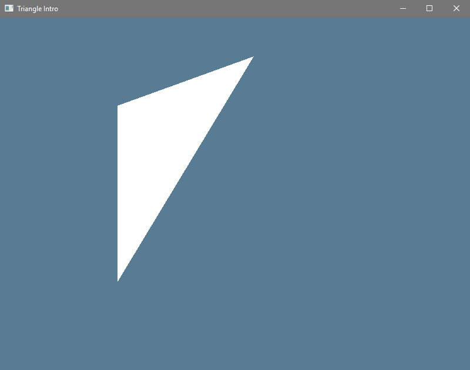

Introduction
What Is gfx-hal
The gfx-hal crate is a cross platform graphics API that attempts to be a minimal wrapping of the "modern, low level" graphics APIs (DX12, Vulkan, and Metal).
To quote Icefox (lead of the GGEZ project):
I think of Vulkan as basically being GPU assembly language, at least in terms of level of abstraction. Which is to say, there is very little abstraction: it gives you the parts that you have to work with, it has nothing stopping you from doing whatever you feel like with those parts, now go write stuff with it. No, there's no memory allocator. I just told you to go write stuff, didn't I? Write it. Comparatively, OpenGL is like GPU Javascript: It starts out convenient, but it's old, wacky, clunky, weird, has a million evolutionary versions and odd edge cases, and it’s not really a convenient model for computation these days. Sure you can make it fast if you try, but you have to jump through lots of hoops to do so.
So this will be a very long style of tutorial, because we'll have to be doing oh-so-many little steps and configurations by hand as we learn to do each new thing. If that's not your scene then sorry I guess, this tutorial might not be for you.
Requirements
I assume that you have basic familiarity with Rust. So go read The Rust Book if you haven't ever done that.
We will also be touching upon elements of unsafe Rust, and so you should also
read The Rustonomicon if you have not.
Actually, that's a mild lie, most of gfx-hal-0.1.0 doesn't define any of its
safety limits anyway (not beyond "whatever Vulkan say is okay"), so it's all a
shot in the dark no matter what you do. Even if you're using a backend that
isn't Vulkan.
I don't assume you have any prior graphics programming skills. I sure don't have much myself. I drew a quad once in OpenGL, but that's it. We'll be learning and reviewing all that stuff together.
The code all assumes that you're using Rust 2018.
I set rustfmt to have 2 space indents and a line limit of 100.
Opening A Window
Before we can draw anything, we need a place to draw it. That means we need to open a window.
Initializing A Window
To open a window in Rust, you want to use the winit
crate to get the best cross-platform coverage available. At the time of writing,
the latest version is 0.18. Set up a project for this tutorial however you like
and just add winit to your Cargo.toml:
[dependencies]
winit = "0.18"
The winit crate is what you'd call "mostly stable". There are small breaking changes
with new versions, but it's usually plain enough to see what the new types or methods
that you need to move to are.
The crate documentation goes over the basic steps of building a window:
# #![allow(unused_variables)] #fn main() { let events_loop = EventsLoop::new(); let window = WindowBuilder::new() .with_title("Example") .build(&events_loop) .expect("Could not create a window!"); #}
Of course, the WindowBuilder type has many other methods you might want to use, so be sure to check all that out.
Responding To Events
Once the window is open the user will try to interact with the window. They'll
move the mouse, type keys, click the x in the corner to close it, things like
that. You handle all of this with
EventsLoop.
You can call
run_forever
with a callback, or
poll_events
with a callback. In both cases, your callback gets an
Event, which is an enum.
Naturally we have to match on that and find the cases we care about. We can discard the
other types. You'll actually get a whole lot of events through winit,
so it's definitely good to ignore most of them if you only care about one or two
event types.
# #![allow(unused_variables)] #fn main() { let mut running = true; while running { events_loop.poll_events(|event| match event { Event::WindowEvent { event: WindowEvent::CloseRequested, .. } => running = false, _ => (), }); } #}
Pack It Together
We'll have a lot of things floating around as we go along, so we'll want to pack things together when we can. Winit doesn't care what graphical libs you're using to draw within the frame, so we can keep just the windowing stuff in its own struct, apart from any gfx-hal things.
# #![allow(unused_variables)] #fn main() { #[derive(Debug)] pub struct WinitState { pub events_loop: EventsLoop, pub window: Window, } #}
Of course, we want to streamline those building steps:
# #![allow(unused_variables)] #fn main() { impl WinitState { /// Constructs a new `EventsLoop` and `Window` pair. /// /// The specified title and size are used, other elements are default. /// ## Failure /// It's possible for the window creation to fail. This is unlikely. pub fn new<T: Into<String>>(title: T, size: LogicalSize) -> Result<Self, CreationError> { let events_loop = EventsLoop::new(); let output = WindowBuilder::new().with_title(title).with_dimensions(size).build(&events_loop); output.map(|window| Self { events_loop, window }) } } #}
And we probably want to go one step farther for our examples and just give a
Default impl that calls new with some default values and then panics if
there's a CreationError.
# #![allow(unused_variables)] #fn main() { pub const WINDOW_NAME: &str = "Hello Winit"; impl Default for WinitState { /// Makes an 800x600 window with the `WINDOW_NAME` value as the title. /// ## Panics /// If a `CreationError` occurs. fn default() -> Self { Self::new(WINDOW_NAME, LogicalSize { width: 800.0, height: 600.0 }).expect("Could not create a window!") } } #}
Running The Program
So far we only have a very tiny main function to look at:
fn main() { let mut winit_state = WinitState::default(); let mut running = true; while running { winit_state.events_loop.poll_events(|event| match event { Event::WindowEvent { event: WindowEvent::CloseRequested, .. } => running = false, _ => (), }); } }
If you run this you get an all white window. Actually, without anything being drawn to the window, it might instead show all black, or even just garbage pixel data. It depends on your windowing system.
Also, normally an application would use "Vertical Synchronization" (Vsync) to slow down the main loop. Without any drawing code we can't use vsync, so the loop will run as fast as possible and use 100% of the core it's on.
Both things are not good, but this is just a stepping stone and we learn to draw stuff in the next lesson, so it's fine.
All of the code discussed here is available within the hello_winit example.
Clearing The Window
Once you have a window open, the usual next step for a graphics tutorial is to draw "your first triangle". You see, the fundamental primitive of 3d graphics is the triangle. Yes, there are some systems such as the Sega Saturn that use quads instead, but in all the modern systems you'll find it's going to be triangles. Even a quad is just two triangles, when you think about it. With enough math and enough parallel processing you can do anything you want with triangles.
- Skyrim? Triangles.
- Breath of The Wild? Has a few more triangles than Skyrim.
- Super Smash Bros? Just a whole lot of triangles.
We'll be covering triangles quite a bit. However, in the context of gfx-hal,
which is like 97% "whatever Vulkan does", even if you're not using the Vulkan
backend, there's a great many steps of setup involved between "a window that
draws nothing" and "a window that draws one triangle".
In fact the official gfx-hal docs specifically give us a warning about this. The top level docs are so short I can include all three sentences right here for dramatic effect:
Low-level graphics abstraction for Rust. Mostly operates on data, not types. Designed for use by libraries and higher-level abstractions only.
There are basically no defaults provided. We have to list out every single little step of the entire configuration process. I mean they convert C types into Rust types for us, but it's still very "do it yourself". That's cool if you actually care about defining it all (which you will some day, I'm sure, or you wouldn't be reading this right now), but it's also long when you're starting out and want to get something on the screen.
Since going all the way to "drawing a triangle" might end up feeling like too
much at once, we'll stop this lesson at an intermediate step. Remember how our
winit window from last lesson didn't refresh itself properly? We can fix just
that much and then stop there. That alone will cover a surprising amount of
ground.
Outline Our Target API
So, in the first lesson we had WinitState and it just had two public fields.
There's not much there, it's all safe code, and it's not the focus of our
lessons, so that's fine. I mean I guess you could pair up the wrong EventLoop
with the wrong Window or something, but two public fields is good enough.
With gfx-hal it is wildly the opposite situation. We're going to be juggling
a dozen or more things at once, and most of them are very unsafe things that
must be handled with extreme care. gfx-hal, at its core, is about directing a
pile of DMA units and a hyper-SIMD co-processor with all safety checks left in
"up to you" mode. That's about as unsafe as it gets. Not only do we want a
HalState type, we want to expose nothing that's inside of it, because it's
all a giant pile of sharp and dangerous things. We want to wrap all that up,
then offer a very small, well curated, semantically meaningful set of operations
that the outside world can access.
Sure sounds like API Design. There's so much that could be said about API design. Let's keep it short:
- Always, Always, Always write the usage code first.
Even before we know any details about how gfx-hal works, we're going to just
write out how we think we should be able to use it. How we think it's be
easiest to use. Once it's built we will be calling the methods a lot more than
we'll be implementing the methods, so unless we end up with some sort of
performance disaster or impossible requirement we'll keep the exterior simple
even if it means the interior might end up a little more complex.
So what's our usage of the HalState type look like?
There's lots of answers you could have to that question. Really, there are. Obviously since I'm writing this we're going to be using what I came up with, but if you think you can get a better solution you should try it out. I'll try to explain my thinking as best as I can, and hopefully you'll agree with me.
Initialization
We already have WinitState, we're going to want HalState too. Clearly the
WinitState can be made before the HalState (since we did it last lesson).
We'll also want to have a LocalState, and that's the grab bag of everything
else in the program. If you're doing a game or a simulation or something that's
your GameState or World or whatever you wanna call the type.
So far the code outline looks like this:
fn main(){ let mut winit_state = WinitState::default(); let mut hal_state = HalState::default(); let mut local_state = LocalState::default(); // MAIN LOOP // CLEANUP }
Except, when you think about it, the way that gfx-hal initializes itself
~~probably~~ definitely depends on the Window it's going to draw within. It
can't be totally default with no inputs. We need a HalState initialization
method that takes a Window reference. The default name for any initialization
method in Rust is just new, and I can't think of a better name to use, so
we'll go with that.
fn main(){ let mut winit_state = WinitState::default(); let mut hal_state = HalState::new(&winit_state.window); let mut local_state = LocalState::default(); // MAIN LOOP // CLEANUP }
Also, of course, our local variables might depend on all sorts of things in some sort of application specific way. That part is up to you.
Main Loop
Once things are all initialized and ready we go into the "main loop" part of the program.
Digression: Video is really just a series of still pictures. You show one after the other, very quickly, and a human brain interprets the existence of movement where none "really" exists. Each picture is a "frame", and how quickly you go from one frame to the next is the "frames per second" (fps). The minimum fps for apparent movement is actually quite modest, you only need about 12. More is better of course, the movement appears smoother the more fps you have. People have been animating for a long time and there's all sorts of standards by now, but on a computer you're usually expected to be drawing at about 60fps for "good" quality animation and 30fps for "I guess that's okay for something made in Unity" quality animation.
Back to code: The implication here is that each pass through our main loop will be one frame of display. We gather up the input for that frame, adjust our local variables according to the input (eg: in a game you might move the player a tiny bit, or whatever change), and then render the new state of the world into a frame that gets shown to the user. Something like this:
fn main(){ let winit_state = WinitState::default(); let hal_state = HalState::new(&winit_state.window); let mut local_state = LocalState::default(); loop { let inputs = UserInput::poll_events_loop(&mut winit_state.event_loop); if inputs.end_requested { break; } local_state.update_from_input(inputs); do_the_render(&mut hal_state, &local_state); } // CLEANUP }
This should look fairly familiar after what we did in the first lesson.
You may be wondering why the do_the_render function is taking a &mut HalState as the first argument, instead of having it be a &mut self method on
the HalState type. Well, I'm not sure it's the perfect decision, but we're
going to try and keep our HalState and LocalState as totally separate as
we can.
- If
HalStatedoesn't know anything about theLocalStatethen it's a lot more likely to focus on reusable drawing operations, and we'll be a lot more likely to have something we can reuse in future situations (including "practical" situations beyond just this tutorial series). - Similarly, if
LocalStatedoesn't know aboutHalStatethen it's easier for it to focus on the "business logic" without worrying about anything else. We could even run theLocalStatewithout graphics at all (sometimes called a "headless" mode), which can be nice if you want to do CI tests, or hook it to a server people connect to, or any other unexpected use.
It can often be tempting to make everything into a method on some type, but that's an urge we need to resist in this situation.
What Does do_the_render Actually Do?
I cheated a bit there, because I wrote down a call to do_the_render without
actually saying what it's doing on the inside. That's the part we care about
the most! That's how we know what our HalState API needs to look like.
For this lesson, all we do is clear the screen. That sounds simple enough. Later lessons will add more, but this is our starting point.
# #![allow(unused_variables)] #fn main() { pub fn do_the_render(hal: &mut HalState, locals: &LocalState) { hal.draw_clear_frame(locals.color()); } #}
That looks okay at first, but there might be some sort of error that happens
during rendering. Nothing inside do_the_render particularly knows about how to
handle an error, so we'll just pass that back up the stack.
# #![allow(unused_variables)] #fn main() { pub fn do_the_render(hal: &mut HalState, locals: &LocalState) -> Result<(), &str> { hal.draw_clear_frame(locals.color()) } #}
And then in main I guess we can just... log the error and quit? It's not ideal
for the program to shut itself down unexpectedly, but we don't really have a
backup strategy at the moment. In a more advanced situation the error might be
from the user trying to switch graphics settings or something, so you could
automatically switch back to the previous settings in that case. Depends on the
program, and the error.
Also, in a full program you'd want to use a proper error enum, but we don't know what all our possible errors are, so we'll just use string literals for now.
Anyway, now things look more like this:
fn main(){ let winit_state = WinitState::default(); let hal_state = HalState::new(&winit_state.window); let mut local_state = LocalState::default(); loop { let inputs = UserInput::poll_events_loop(&mut winit_state.events_loop); if inputs.end_requested { break; } local_state.update_from_input(inputs); if let Err(e) = do_the_render(&mut hal_state, &local_state) { error!("Rendering Error: {:?}", e); break; } } // CLEANUP }
Cleanup
Usually when working with "foreign" data, anything that comes from outside of
Rust, you have to consider the possibility that you'll have to manually do some
cleanup work. gfx-hal is no different. Not only do we need to clean things up
to avoid leaks when we're done, we need to clean up in the exactly correct
order. The backend code can segfault your process just by you not shutting it
down properly.
How do we expose this in our API?
We don't.
I'm not saying that we ignore the subject of cleanup, that would be foolish,
but I am saying that we should keep all of it entirely within the HalState
type. Things are smoothest for the user when they can just let a type drop away
without a care, and we're going to try and allow for such an easy use
experience. Mostly what this means is that we won't want to have any "getter"
methods that let an outside user move out anything that needs to be manually
destroyed later. If they want to check the value of a number or maybe even get a
&mut to some that's fine, but anything that needs to be explicitly cleaned up
we can't let out of our control.
Now we can see our final outline:
fn main(){ let winit_state = WinitState::default(); let hal_state = HalState::new(&winit_state.window); let mut local_state = LocalState::default(); loop { let inputs = UserInput::poll_events_loop(&mut winit_state.event_loop); if inputs.end_requested { break; } local_state.update_from_input(inputs); if let Err(e) = do_the_render(&mut hal_state, &local_state) { error!("Rendering Error: {:?}", e); break; } } }
Will we achieve this? Hard to say without trying.
Activate Logging Powers
As you write for gfx-hal, you'll definitely write stuff that's wrong. That's
just how it goes, no shame in it. There's so many rules and details that even
the gfx-rs team members don't know all of it all the time. They look at the
Vulkan spec to verify the rules just like anyone else has to. Thankfully, we can
avoid having too many bugs quietly creep into things by logging what's going on
inside the program and hopefully something will show up in the logs to explain
the problem when there is a problem.
The log Crate
If you've ever done logging before you know that usually there's a "logging facade" which defines a way to write log messages that libraries use, and then there's an actual logging implementation that a binary will activate at the start of a process to receive logging messages and deal with them. Rust is no different.
You use the log crate to write a logging message. You use
a logging implementation of
choice to
actually process those logging messages. The actual macros for logging are just
like how println! works, but instead of being called println! there's one
macro for each "level" of logging. From most important to least important it
goes: error!, warn!, info!, debug! and trace!. Different logging
implementations let you limit the levels that actually get logged, and the
logging crate has features to restrict what logging messages even get compiled
in (so you can compile out all logging in release mode or whatever). It's a
whole huge thing you can really dig through if you want.
I don't want to. I want to not have any fuss. So we'll use
simple_logger which is exactly as easy
as it sounds. You write one line, once, and then logging messages just go to
stdout or stderr.
First we add things to our Cargo.toml file.
[dependencies]
log = "0.4.0"
simple_logger = "1.0"
winit = "0.18"
And then we turn on the simple_logger in main before we do anything else:
fn main() { simple_logger::init().unwrap(); // ...
And now we'll see anything that someone wanted to log. If we want to do our own logging that's easy too:
# #![allow(unused_variables)] #fn main() { #[allow(unused_imports)] use log::{error, warn, info, debug, trace}; #}
LunarG Vulkan SDK
Next you'll also want some tools that aren't strictly Rust related (shocking, I know).
The LunarG Vulkan SDK is a free set of
tools for all major operating systems. Once you install the SDK, if you're using
the gfx-backend-vulkan crate as your gfx-hal backend it'll log any
validation errors when debug_assertions are on. You don't need to do any
special setup, it just conveniently happens for you.
Unfortunately, when testing with other backends you're much more "on your own", but some help is still better than zero help. You can set up Metal validation, and I'll update here just as soon as one of the gfx team members with a mac updates me on what to say.
Adding In gfx-hal And A Backend
Adding gfx-hal to our Cargo.toml file comes in two parts. There's gfx-hal,
and also we need an actual "backend" that provides a specific implementation of
the types and operations that gfx-hal defines.
Configuring Cargo
We want to keep the backend selection as easy to swap as possible. Normally this is done at compile time, since there's only about one good backend per OS anyway, and it keeps things simpler than trying to select a backend at startup. The standard idiom for how to do this looks something like:
[features]
default = []
metal = ["gfx-backend-metal"]
dx12 = ["gfx-backend-dx12"]
vulkan = ["gfx-backend-vulkan"]
[dependencies]
log = "0.4.0"
simple_logger = "1.0"
winit = "0.18"
gfx-hal = "0.1"
arrayvec = "0.4"
[dependencies.gfx-backend-vulkan]
version = "0.1"
optional = true
[target.'cfg(target_os = "macos")'.dependencies.gfx-backend-metal]
version = "0.1"
optional = true
[target.'cfg(windows)'.dependencies.gfx-backend-dx12]
version = "0.1"
optional = true
If you want the Rust Language Server (RLS) to play nice with the various
optional features you must tell it which one to use for its compilations. You
could specify a default feature, but that's not quite elegant. If you're using
VS Code with the RLS plugin you can instead make a .vscode/settings.json file
in your project folder, and then in there place a setting for the feature you
want it to use for RLS runs. Something like this:
{
"rust.features": [
"dx12"
]
}
If you're using RLS with some editor besides VS Code I'm afraid I don't know the details of how you tell RLS to use a particular feature, but you probably can. Consult your plugin docs, and such.
Configuring The Code
Over inside our main file we won't actually be importing too much from the
backends, but we'll place some conditional use statements so that they're
always aliased to the same name, regardless of what one we're using.
# #![allow(unused_variables)] #fn main() { #[cfg(feature = "dx12")] use gfx_backend_dx12 as back; #[cfg(feature = "metal")] use gfx_backend_metal as back; #[cfg(feature = "vulkan")] use gfx_backend_vulkan as back; #}
Any Other Backend Options?
There are other backend options that we haven't considered:
- gfx-backend-empty does nothing
but provide the required implementations as empty structs and do-nothing
methods and similar. It's mostly used in the rustdoc examples for
gfx-hal, so that they can check that doctests compile properly. You might also use this with RLS I guess, but since you'll also need a real backend compiled to run any code, you might as well make RLS use your real backend. - gfx-backend-gl lets you target OpenGL 2.1+ and OpenGL ES2+. You'd probably use this if you wanted to run inside a webpage, or perhaps on a Raspberry Pi (which has OpenGL ES2 drivers, but not Vulkan), or anything else where you can't pick one of the "main" options. Unfortunately, the GL backend is actually a little busted at the moment. The biggest snag is that webpages and desktop apps have rather different control flow, so it's hard to come up with a unified API. Work is being done, and hopefully soon I'll be able to recommend the GL backend.
Also arrayvec
As you might have noticed, we're going to be using
arrayvec later on for the ArrayVec type. I don't
want to come back to Cargo.toml later, so we can just mention it now.
ArrayVec works basically just like Vec but it's backed by an array on the
stack, not a data blob on the heap, so it can't resize, but it also doesn't need
a heap allocation to construct. We'll be using it during our draw code so that
we can call a few critical functions without doing a heap allocation each frame.
The functions in question have some weird generic bounds that work out for Vec
and ArrayVec and similar, but not for arrays themselves. Generics just be like
that sometimes.
Implementing draw_clear_frame
You might think that we'd start by learning how to initialize things, but actually our core goal is clearing the screen. Anything else that we do, including the initialization, is only in service to that goal. So first we'll focus on our core goal, then we'll see what we need for that, and then we'll see what we need for that, until eventually we stop needing to have already done something else.
We'll be filling in this method:
# #![allow(unused_variables)] #fn main() { impl HalState { pub fn draw_clear_frame(&mut self, color: [f32; 4]) -> Result<(), &'static str> { unimplemented!() } } #}
CommandQueue
The heart of it all is that we want to be able to safely call
CommandQueue::submit,
which submits a list of work which we define in a CommandBuffer to the GPU (in
this case just clearing the image), and then we call
Swapchain::present,
which instructs the GPU to wait until the CommandQueue work is done and
"present" the completed image into the Swapchain.
Exactly what happens at that point depends on how you've configured the
Swapchain, which we'll talk about in the initialization section. The important
part to remember here is that Swapchain::present is effectively a
non-blocking call. If you're used to using OpenGL you might expect present
to be the point where your loop halts until Vsync, but with gfx-hal anything
that makes the CPU wait on the GPU is controlled via "Fences" (which we'll see
in a moment), and that doesn't include present.
submit
The actual type of the submit method is super generic which means that it
reads like a pile of space runes:
# #![allow(unused_variables)] #fn main() { pub unsafe fn submit<'a, T, Ic, S, Iw, Is>( &mut self, submission: Submission<Ic, Iw, Is>, fence: Option<&B::Fence> ) where T: 'a + Submittable<B, C, Primary>, Ic: IntoIterator<Item = &'a T>, S: 'a + Borrow<B::Semaphore>, Iw: IntoIterator<Item = (&'a S, PipelineStage)>, Is: IntoIterator<Item = &'a S>, #}
Gross, right? Let's cut out those generics and look again:
# #![allow(unused_variables)] #fn main() { pub unsafe fn submit(&mut self, submission: Submission, fence: Option<&B::Fence>) #}
Okay that's way easier to look at and understand. It's just a rustified
version of
vkQueueSubmit.
Which doesn't mean anything to you right now because we're just starting, but
like I said at the top: if the gfx-hal docs aren't clear on their semantics,
you can usually assume that Vulkan semantics apply.
- We
submitaSubmissioninto theCommandQueue. Instead of giving a count and a pointer to an array of "VkSubmitInfo", we give a singleSubmission, which is itself composed ofIntoIteratorthings that I assume get iterated over. Unfortunately, since each backend has to handle the info in slightly different ways, we have to pay for that cross-platform benefit by things sometimes being a little less clear on our end. - We optionally give a "fence" which gets "signalled" once all of the submitted command buffers have completed execution. We'll talk about that in a moment.
present
The present method looks like this
# #![allow(unused_variables)] #fn main() { unsafe fn present<'a, C, S, Iw>( &'a self, present_queue: &mut CommandQueue<B, C>, image_index: SwapImageIndex, wait_semaphores: Iw ) -> Result<(), ()> where Self: 'a + Sized + Borrow<B::Swapchain>, C: Capability, S: 'a + Borrow<B::Semaphore>, Iw: IntoIterator<Item = &'a S>, #}
And if we cut out the extra stuff:
# #![allow(unused_variables)] #fn main() { unsafe fn present( &self, present_queue: &mut CommandQueue<B, C>, image_index: SwapImageIndex, wait_semaphores: Iw) -> Result<(), ()> #}
So present takes a &mut to our CommandQueue, a target index within the
Swapchain to present to, and a semaphore to wait on before actually presenting
the image. This works like
vkQueuePresentKHR.
When we call submit, one of the Submission elements is going to be a semaphore
to signal when the rendering is done. When we call present we give it that
same semaphore to wait on before presenting the image, so that the user only
sees complete images.
Fences?
A fence (aka VkFence) is one of the two synchronization primitives we'll be dealing with. It's basically just a bool, it can "signaled" or "unsignaled". You can share a fence between threads and everyone always sees the current state, so it's like having an AtomicBool.
Fences are for CPU to GPU synchronization. The CPU can wait on a fence, and the GPU will signal the fence when it's done whatever it's supposed to have done.
Semaphores?
A semaphore (aka
VkSemaphore)
is the other synchronization primitive that we deal with. In some contexts (eg:
winapi) a semaphore can be any integer value, but in a Vulkan / gfx-hal
context they can only be "signaled" or "unsignaled".
The big difference between a fence and a semaphore is that semaphores are for GPU to GPU synchronization. When once part of a graphics pipeline (such as presentation to the swapchain) depends on another part of the pipeline (such as command buffer processing), then you describe that dependency to the GPU using a semaphore.
Submission
Supposing that we already have a CommandQueue from somewhere, we need to give
it a Submission of what to do.
# #![allow(unused_variables)] #fn main() { pub struct Submission<Ic, Iw, Is> { pub command_buffers: Ic, pub wait_semaphores: Iw, pub signal_semaphores: Is, } #}
Hmm, but the submit method had extra bounds in there:
# #![allow(unused_variables)] #fn main() { T: 'a + Submittable<B, C, Primary>, Ic: IntoIterator<Item = &'a T>, S: 'a + Borrow<B::Semaphore>, Iw: IntoIterator<Item = (&'a S, PipelineStage)>, Is: IntoIterator<Item = &'a S>, #}
So if we put that together, and allow ourselves to use some slightly fake Rust syntax for just a moment, we need to build this:
# #![allow(unused_variables)] #fn main() { pub struct Submission { pub command_buffers: IntoIterator<Item = &'a Submittable<B, C, Primary>>, pub wait_semaphores: IntoIterator<Item = (&'a Borrow<B::Semaphore>, PipelineStage)>, pub signal_semaphores: IntoIterator<Item = &'a Borrow<B::Semaphore>>, } #}
command_buffersis our Submittable things, which areBorrow<B::CommandBuffer>, so we can think of that as being sorta like&[CommandBuffer].wait_semaphoresgives the semaphores that this submission has to wait on before it starts. Each semaphore is paired with a PipelineStage, allowing your submission to wait for a stage, do some work at that stage, wait for another stage, do some more work at the new stage, and so on.signal_semaphoresgives a list of semaphores that this submission will signal once it completes. It doesn't say, but I'm guessing that all the semaphores just get signaled at once at the end of the Submission.
All of this is basically what you find in the VkSubmitInfo struct.
ArrayVec Submissions
Remember when I said that we'd use the ArrayVec to avoid allocations per frame? That's this part. It's simple really. Instead of writing something like:
# #![allow(unused_variables)] #fn main() { let command_buffers = vec![the_command_buffer]; #}
You write something like
# #![allow(unused_variables)] #fn main() { let command_buffers: ArrayVec<[_; 1]> = [the_command_buffer].into(); #}
Submitting And Presenting
So far it sounds like we want something like this
# #![allow(unused_variables)] #fn main() { pub fn draw_clear_frame(&mut self, color: [f32; 4]) -> Result<(), &str> { // SETUP FOR THIS FRAME // ... // RECORD SOME COMMANDS // ... // SUBMISSION let command_buffers: ArrayVec<[_; 1]> = [the_command_buffer].into(); let wait_semaphores: ArrayVec<[_; 1]> = [(image_available, PipelineStage::COLOR_ATTACHMENT_OUTPUT)].into(); let signal_semaphores: ArrayVec<[_; 1]> = [render_finished].into(); let present_wait_semaphores: ArrayVec<[_; 1]> = [render_finished].into(); let submission = Submission { command_buffers, wait_semaphores, signal_semaphores, }; unsafe { the_command_queue.submit(submission, Some(flight_fence)); the_swapchain.present(&mut the_command_queue, i_u32, present_wait_semaphores) .map_err(|_|"Failed to present into the swapchain!") } } #}
For all my fuss about things being so "manual and on your own", that seems fairly reasonable so far.
Recording Commands
So we need to fill up a CommandBuffer with the operations that we want to have happen during the draw process.
All we want to do is clear the screen, that's got to be easy enough.
Well, it turns out that a CommandBuffer isn't totally free to make, so we want
to make them ahead of time and then pick out and use a particular command buffer
each frame. That's easy, we can change our Submission declaration very easily.
Also, before it's part of the Submission, we want to grab a &mut to the
particular command buffer and write to it. That calls for the ever-lovable
"inner scope" so that the &mut goes away and we can take a & to our buffer
instead. Thankfully (I guess), recording to a CommandBuffer is all unsafe, so
we can kill two birds with one stone.
A CommandBuffer is actually wrapping around a RawCommandBuffer with some metadata for bonus type safety. All the real documentation is given on the RawCommandBuffer type. Unfortunately, the methods aren't exactly the same name. Hopefully that's fixed in 0.2.
We start by calling begin
# #![allow(unused_variables)] #fn main() { pub unsafe fn begin(&mut self, allow_pending_resubmit: bool) #}
To begin the buffer overall. Then we start a particular render pass with
# #![allow(unused_variables)] #fn main() { pub unsafe fn begin_render_pass_inline<T>( &mut self, render_pass: &B::RenderPass, frame_buffer: &B::Framebuffer, render_area: Rect, clear_values: T ) -> RenderPassInlineEncoder<B> where T: IntoIterator, T::Item: Borrow<ClearValue>, #}
Which records a render pass with no secondary command buffers.
Next we... immediately finish the render pass. The RenderPass struct will define how to deal with the color buffer, including the clear effect, and the ClearValue just picks what color to clear to. We're already done.
# #![allow(unused_variables)] #fn main() { pub fn draw_clear_frame(&mut self, color: [f32; 4]) -> Result<(), &str> { // SETUP FOR THIS FRAME // ... // RECORD SOME COMMANDS { let buffer = &mut self.command_buffers[i_usize]; let clear_values = [ClearValue::Color(ClearColor::Float(color))]; buffer.begin(false); buffer.begin_render_pass_inline( &self.render_pass, &self.swapchain_framebuffers[i_usize], self.render_area, clear_values.iter(), ); buffer.finish(); } // SUBMISSION // ... } #}
Frame Setup
What's left to do as setup? Well, the GPU can be doing more than one of these buffer things at once. When you've got several images all going on it's called having frames "in flight". At the start of each frame of work, we have to pick the right fences and semaphores and all that for the current frame that we're going to be working with. The simplest way is to just keep them in parallel vectors and go through them like a ring buffer.
However, even once we've picked our current sync primitives, we have to
acquire
a particular image to work with out of the swapchain. We don't move the whole
image out of the swapchain, we just get an index to target later with the
present method.
Final draw_clear_frame Code
So now we put it all together, with the signaling in big caps to help make it clear.
- Get our sync primitives out of our ring buffers
- WAIT on the current
flight_fenceto know we're in the clear to use this position of our ring buffer. - Reset that fence so we can pass it as part of our submission later.
- Grab an image index that will SIGNAL the
image_availablesemaphore once it's fully ready. - Record our command buffer while we're waiting for that.
- Submit a command buffer to WAIT on
image_availableand SIGNAL bothrender_finishedandflight_fence. - Present the results into the swapchain after a WAIT on
render_finished
# #![allow(unused_variables)] #fn main() { /// Draw a frame that's just cleared to the color specified. pub fn draw_clear_frame(&mut self, color: [f32; 4]) -> Result<(), &str> { // SETUP FOR THIS FRAME let flight_fence = &self.in_flight_fences[self.current_frame]; let image_available = &self.image_available_semaphores[self.current_frame]; let render_finished = &self.render_finished_semaphores[self.current_frame]; // Advance the frame _before_ we start using the `?` operator self.current_frame = (self.current_frame + 1) % self.frames_in_flight; let (i_u32, i_usize) = unsafe { self .device .wait_for_fence(flight_fence, core::u64::MAX) .map_err(|_| "Failed to wait on the fence!")?; self .device .reset_fence(flight_fence) .map_err(|_| "Couldn't reset the fence!")?; let image_index = self .swapchain .acquire_image(core::u64::MAX, FrameSync::Semaphore(image_available)) .map_err(|_| "Couldn't acquire an image from the swapchain!")?; (image_index, image_index as usize) }; // RECORD COMMANDS unsafe { let buffer = &mut self.command_buffers[i_usize]; let clear_values = [ClearValue::Color(ClearColor::Float(color))]; buffer.begin(false); buffer.begin_render_pass_inline( &self.render_pass, &self.framebuffers[i_usize], self.render_area, clear_values.iter(), ); buffer.finish(); } // SUBMISSION AND PRESENT let command_buffers = &self.command_buffers[i_usize..=i_usize]; let wait_semaphores: ArrayVec<[_; 1]> = [(image_available, PipelineStage::COLOR_ATTACHMENT_OUTPUT)].into(); let signal_semaphores: ArrayVec<[_; 1]> = [render_finished].into(); // yes, you have to write it twice like this. yes, it's silly. let present_wait_semaphores: ArrayVec<[_; 1]> = [render_finished].into(); let submission = Submission { command_buffers, wait_semaphores, signal_semaphores, }; let the_command_queue = &mut self.queue_group.queues[0]; unsafe { the_command_queue.submit(submission, Some(flight_fence)); self .swapchain .present(the_command_queue, i_u32, present_wait_semaphores) .map_err(|_| "Failed to present into the swapchain!") } } #}
Initializing HalState
So for our draw_clear_frame method to work it expects that we have many things
on hand as part of HalState. Listing them in the order that they're used:
- fences (requires a Device + frames_in_flight)
- semaphores (requires a Device + frames_in_flight)
- current_frame (just starts at 0)
- frames_in_flight (comes from the Swapchain)
- device (requires an Adapter)
- swapchain (requires a Surface+Adapter+Device)
- command_buffers (requires a CommandPool)
- render_pass (requires a Device)
- swapchain_framebuffers (requires ImageView values)
- render_area (comes from the Swapchain)
- queue_group (requires an Adapter)
But, as you can probably guess, that's not the order that they're initialized. You should have noticed that there's some things on there we haven't even discussed yet, which also have their requirements. In no particular order:
- image_views (requires a Device+Backbuffer)
- backbuffer (requires Surface+Adapter)
- Command Pool (requires Device)
- Surface (requires an Instance+Window)
- Adapter (requires an Instance)
- Instance
Now we just re-order it all so that nothing is built before the parts it depends on. We'll even add some names to the build phases to help group it mentally:
- Top Level Stuff
- Instance
- Surface (requires an Instance+Window)
- Adapter (requires an Instance)
- queue_group (requires an Adapter)
- device (requires an Adapter)
- The GPU Swapchain
- swapchain (requires a Surface+Adapter+Device)
- backbuffer (requires Surface+Adapter)
- render_area (comes from the Swapchain)
- frames_in_flight (comes from the Swapchain)
- fences (requires a Device + frames_in_flight)
- semaphores (requires a Device + frames_in_flight)
- RenderPass
- render_pass (requires a Device + Swapchain format)
- Targets For Rendering
- image_views (requires a Device+Backbuffer)
- framebuffers (requires ImageView values)
- Command Issuing
- Command Pool (requires Device)
- command_buffers (requires a CommandPool + Swapchain)
- Misc
- current_frame (just starts at 0)
Notice that after the initial top level stuff you can do the other general phases in about any order you want. You use the parts that they each build all at once during rendering, but they can be constructed and configured independently.
Also, there's many other things that a person might initialize in gfx-hal.
That's why we looked at how to submit the command we wanted first, so we don't
go wandering off initializing all sorts of things we don't end up needing.
And I guess we can just copy this outline as our outline for the explanation of each step too. Nice when things work out like that.
Top Level Stuff
Alright, so we're going to initialize a HalState. Well, just as with drawing,
there might be any number of problems that come up during this many step
process.
So the method we're filling in looks like this:
# #![allow(unused_variables)] #fn main() { impl HalState { pub fn new(window: &Window) -> Result<Self, &'static str> { unimplemented!() } } #}
Instance
An Instance is a backend specific black box. It's the handle that you hold to
prove that you've activated the backend API, and when it drops the backend tries
to close down, so you have to hold on to it at the very end and let it go last.
For something so important, you'd imagine that there's a dedicated trait for them, and you'd be right. You'd also expect that the trait includes a way to create them instead of leaving it up to convention, and you'd be wrong.
Still, it's very easy. We give an instance name and a version and the details of how that's used depend on the backend.
# #![allow(unused_variables)] #fn main() { let instance = back::Instance::create(WINDOW_NAME, 1); #}
Surface
The Surface
is an abstraction of how the Window (from winit) and your Instance (from
your gfx-backend-whatever) will actually be able to interact and show
something on the screen.
Similar to the Instance, it's very important, but also totally boring to create:
# #![allow(unused_variables)] #fn main() { let mut surface = instance.create_surface(window); #}
As far as I can tell, it has no special cleanup operation. It probably shouldn't outlive the Instance or the Window, but that's just a best guess.
Adapter
The Adapter is... something that supports the usage of the API you've got an Instance for. It's probably a hardware GPU, but it could technically be a purely software implementation.
We actually don't make an Adapter, we pick one that already exists. Once we've picked one, we haven't even made any changes to the system. Picking an Adapter is like picking a IP address to connect to. It's one step to select the IP address you want, and then another step to actually open a connection to that IP address (which we'll do in a moment).
We have to call
Instance::enumerate_adapters,
which gives a vector of things to pick from. Our criteria here is based on the queue_families: Vec<B::QueueFamily> that each Adapter has. We want a QueueFamily
- That supports Graphics
- That our Surface supports
It's considered a bug in gfx-hal if any backend ever gives a QueueFamily that
has 0 max queues, so we don't need to bother checking that.
Since we're going over a vector, we can use some fancy Iterator stuff
# #![allow(unused_variables)] #fn main() { let adapter = instance .enumerate_adapters() .into_iter() .find(|a| { a.queue_families .iter() .any(|qf| qf.supports_graphics() && surface.supports_queue_family(qf)) }) .ok_or("Couldn't find a graphical Adapter!")?; #}
Device and QueueGroup
This is a "two things in one step" situation. From here on out we'll be doing a
lot of steps where we have an inner scope do to some setup, then we pass the
important data back up to the new method's primary scope. It's a Rust take on
what you might call "Style
C"
coding. We're just going to let the method get super long, with every single
step being as plan and obvious as possible, to see the full horror of what we're
doing.
The actual process here is easy enough to understand.
- Every Adapter has a
PhysicalDevice,
and you call
opento actually "connect" your program to that PhysicalDevice. This (hopefully) gives a Gpu. You have to pass in a list of QueueFamily values with a priority for each one. - A Gpu is a pairing of a Device (which is a logical device, but you use it so often they wanted to make the name shorter) and a Queues value, which is a container for the different queues that we can now use.
- Once we've got the Queues, we pull out a particular
QueueGroup
as well, which we use much later to build the CommandPool, and also it's how
we
submitour written CommandBuffer values of course.
# #![allow(unused_variables)] #fn main() { let (device, queue_group) = { let queue_family = adapter .queue_families .iter() .find(|qf| qf.supports_graphics() && surface.supports_queue_family(qf)) .ok_or("Couldn't find a QueueFamily with graphics!")?; let Gpu { device, mut queues } = unsafe { adapter .physical_device .open(&[(&queue_family, &[1.0; 1])]) .map_err(|_| "Couldn't open the PhysicalDevice!")? }; let queue_group = queues .take::<Graphics>(queue_family.id()) .ok_or("Couldn't take ownership of the QueueGroup!")?; let _ = if queue_group.queues.len() > 0 { Ok(()) } else { Err("The QueueGroup did not have any CommandQueues available!") }?; (device, queue_group) }; #}
Now, I can already hear you trying to tell me that we shouldn't repeat the
find operation, but because of how the lifetimes work out we can't hang on to
a queue_family and also use our Adapter normally because the QueueFamily
reference keeps the Adapter borrowed the whole time, and it's a mess. Even
if we didn't care about lifetime issues the two find operations are actually
different because one works on & and the other is working on && and we just
don't happen to see the difference because of Deref
coercion.
It's fine to just do it twice, don't worry too much about it, really.
The GPU Swapchain
The Swapchain is like a collection of images on the GPU. They've got a linear index, like an array or vector, and the GPU jumps around the Swapchain showing one image at any given moment. This is where things start to get more configurable.
Swapchain and friends
The basic idea is that you call Surface::compatibility to get information about what sort of SwapchainConfig you're allowed to build, and then you call Device::create_swapchain with your Surface and the config you want. This gives you a Swapchain, which has methods for controlling the GPU's swapchain, as well as a Backbuffer, which holds the handles to particular Image data. We use an Image to make an ImageView, and we use that to make a Framebuffer, and that's what we're manipulating with the CommandBuffer.
So what SwapchainConfig do we try to build? Well, the best one we can. Unfortunately, this varies by quite a bit. Even if I just switch from the Vulkan backend to the DX12 backend on a single machine the system ends up giving me different compatibility results.
The SwapchainConfig type does have a from_caps method to try and help you
build a value, but it's shockingly error prone, because not all of the
capabilities of your Surface are actually contained in the SurfaceCapabilities
struct! The Surface::compatibility also gives you Format, PresentMode, and
CompositeAlpha that you have to pay attention to, which from_caps totally
ignores. We're not going to use that, we'll just write out a struct literal
ourselves. SwapchainConfig looks like this:
# #![allow(unused_variables)] #fn main() { pub struct SwapchainConfig { pub present_mode: PresentMode, pub composite_alpha: CompositeAlpha, pub format: Format, pub extent: Extent2D, pub image_count: SwapImageIndex, pub image_layers: Layer, pub image_usage: Usage, } #}
present_mode: PresentMode gives us access to that sweet, sweet Vsync. Well, if it's available.- We would most like to have
Mailbox, which lets us do "triple buffering". That's where you have at least 3 images, and one is "being shown" and then you render frames as quick as you can to different swapchain slots, always keeping the most recent complete frame ready. This gives the least amount of latency between user input and what they see on the screen. - We would accept
Fifo, where frames are shown in the exact order that they're created. If you do this with 2 images you can have "double buffering" (where you show one frame and work on the next), but if you're using this with more than two images then it causes excess latency between input and display. - We would begrudgingly accept
Relaxedif we had to use it, which "usually" has vsync but not always. I suppose this is for low-end machines. We want to avoid this if we can. - We would hate to have to use
Immediate, where there's no vsync at all. That would just be terrible. We could live with it, but it'd be terrible because we'd have to sync the program ourselves to avoid eating up 100% of the core (and all of the user's battery, if they're on a mobile device).
- We would most like to have
composite_alpha: CompositeAlpha controls how your window interacts with other windows within the user's UI.- For now we'd prefer
Opaque, so that we just show our window "normally". - We'd also accept
Native, because we trust the user to have set things up how they want. PreMultipliedorPostMultipliedwill almost certainly give "wrong" results because our graphics aren't smart enough to compensate for being forced into such a mode. Well, they'd be wrong if our graphics were anything more than a single clear color, but you know what I mean.
- For now we'd prefer
format: The Format of the swapchain is how the data for each pixel is expected to exist in memory. Normally we'd be a lot more interested, but since we're just clearing the screen it doesn't super matter. Still, we'll try to pick an sRGB format (which stands for "standard Red Green Blue"), just because that's what we'll be using in basically all the future lessons. Here we've got anOption<Vec<_>>, which means that the selection block will be silly and fiddly.extent: The Extent2D describes a full sized rectangle (not a sub-rectangle), and selects a size for our images. Here's where we start using the SurfaceCapabilities that we got earlier. The SwapchainConfigextentthat we use must be within the range that theextents: Range<Extent2D>field in our SurfaceCapabilities specifies. Note that the Range type is semantically supposed to be exclusive but both the Vulkan and DX12 backends use it wrong, so it's actually an inclusive value here.- As far as what extent we're actually going to pick, we'll go as big as we can. The Surface should should end up being the size of our Window, so our images are just "normal" size and it all works out.
image_count: The SwapImageIndex is just au32for how many images we want in our Swapchain. Like I said, if we're going to be usingMailboxthen we want 3, otherwise we'll go with 2. Note that we have to respect theimage_count: Range<SwapImageIndex>field of the SurfaceCapabilities, which is another field that is a Range but should actually be a RangeInclusive.image_layers: The Layer is just au16for how many layers we want in our image. 1 is fine.image_usage: The Usage defines how we'll be using the images in the swap chain in terms of the render pass stuff. We'll be using just color for now, so we check for that.
With that all done, we make the SwapchainConfig and then we use the Device to build a Swapchain and Backbuffer pair. This is a very vertical portion of code, but not too much is actually happening.
# #![allow(unused_variables)] #fn main() { let (swapchain, extent, backbuffer, format, frames_in_flight) = { let (caps, preferred_formats, present_modes, composite_alphas) = surface.compatibility(&adapter.physical_device); info!("{:?}", caps); info!("Preferred Formats: {:?}", preferred_formats); info!("Present Modes: {:?}", present_modes); info!("Composite Alphas: {:?}", composite_alphas); // let present_mode = { use gfx_hal::window::PresentMode::*; [Mailbox, Fifo, Relaxed, Immediate] .iter() .cloned() .find(|pm| present_modes.contains(pm)) .ok_or("No PresentMode values specified!")? }; let composite_alpha = { use gfx_hal::window::CompositeAlpha::*; [Opaque, Inherit, PreMultiplied, PostMultiplied] .iter() .cloned() .find(|ca| composite_alphas.contains(ca)) .ok_or("No CompositeAlpha values specified!")? }; let format = match preferred_formats { None => Format::Rgba8Srgb, Some(formats) => match formats .iter() .find(|format| format.base_format().1 == ChannelType::Srgb) .cloned() { Some(srgb_format) => srgb_format, None => formats.get(0).cloned().ok_or("Preferred format list was empty!")?, }, }; let extent = caps.extents.end; let image_count = if present_mode == PresentMode::Mailbox { (caps.image_count.end - 1).min(3) } else { (caps.image_count.end - 1).min(2) }; let image_layers = 1; let image_usage = if caps.usage.contains(Usage::COLOR_ATTACHMENT) { Usage::COLOR_ATTACHMENT } else { Err("The Surface isn't capable of supporting color!")? }; let swapchain_config = SwapchainConfig { present_mode, composite_alpha, format, extent, image_count, image_layers, image_usage, }; info!("{:?}", swapchain_config); // let (swapchain, backbuffer) = unsafe { device .create_swapchain(&mut surface, swapchain_config, None) .map_err(|_| "Failed to create the swapchain!")? }; (swapchain, extent, backbuffer, format, image_count as usize) }; #}
render_area
This is a Rect
version of our Extent2D. While an Extent2D is semantically the full area of an
image or texture (storing only width:u32 and height:u32), a Rect is some
sub-portion of such an area (storing x,y,w,h, all i16). Note that your
sub-portion can totally just be "all of it".
frames_in_flight
This is just us storing how many images are in our Swapchain. As you saw when we cleared the screen, we'll have one set of just about everything per frame in flight.
Fences and Semaphores
Generating the Fence and Semaphore values is quite boring. You just call
create_fence and create_semaphore on your Device value, over and over until
you have enough. Technically this might cause an OutOfMemory problem on the GPU,
but that's not very likely, so there's little chance that we'll have a problem
in this stage of things.
# #![allow(unused_variables)] #fn main() { let (image_available_semaphores, render_finished_semaphores, in_flight_fences) = { let mut image_available_semaphores: Vec<<back::Backend as Backend>::Semaphore> = vec![]; let mut render_finished_semaphores: Vec<<back::Backend as Backend>::Semaphore> = vec![]; let mut in_flight_fences: Vec<<back::Backend as Backend>::Fence> = vec![]; for _ in 0..frames_in_flight { in_flight_fences.push(device.create_fence(true).map_err(|_| "Could not create a fence!")?); image_available_semaphores.push(device.create_semaphore().map_err(|_| "Could not create a semaphore!")?); render_finished_semaphores.push(device.create_semaphore().map_err(|_| "Could not create a semaphore!")?); } (image_available_semaphores, render_finished_semaphores, in_flight_fences) }; #}
RenderPass
A RenderPass describes each part of the whole graphical processing for an image. Well, actually it describes one "pass" which has various "sub-passes", but you can also do multi-pass rendering, and then each pass can have its own sub-passes. It's a lot of organization you might need to keep track of, but it lets you be very precise about what happens when.
The RenderPass type has a backend specific definition so there's no general struct here, not even a trait for them, unfortunately. Instead, you make one with Device::create_render_pass. This works a lot like that Submission stuff we had to deal with before, where we'll have lists of stuff that all kinda get piled together. We need one Attachment value (for the color), one SubpassDesc value (remember how we did a single "inline" render pass?), and then naturally we have no SubpassDependency values since we only have a single subpass.
- Our Attachment needs
format: the format that we picked out for our Swapchain to be using.samples: is only used when you get to multisampling, which is a later lesson.ops: determines what to do with the data in this Attachment at the start of the subpass and at the end of the subpass. Remember how we recorded a command that set a clear color and nothing else? That didn't even do the clearing. This is the part that does the clearing. When the subpass begins the old color value is all cleared. When the subpass ends the color values are stored.stencil_ops: Is something we'll use later, but for nowDONT_CAREis sufficient. I guess this is one of the few places where we kinda have a default to work with.layouts: This lets us define the starting and ending pixel layout of the image we're processing. Each image has a pixel format which doesn't change from pass to pass, but it also has a layout that does change from pass to pass. It depends on what the image is being used for. In our case it starts as Undefined (since nothing happened before this) and it ends with Present (since we're done and want to present the image). Once again, we're using a Range when the type should be RangeInclusive, or even maybe just a tuple.
- Our SubpassDesc needs the color attachment, and no others. This is where you
can get really fancy with "post-processing effects" type of stuff. We just
need one
AttachmentRef
for our colors. An ID value (0 is fine) and a layout. During this pass we'll
be affecting the color, so we'll pick
ColorAttachmentOptimal. Well, we don't affect the colors after the clear during this tutorial, but once we start drawing stuff it'll matter, so we might as well set it now.
# #![allow(unused_variables)] #fn main() { let render_pass = { let color_attachment = Attachment { format: Some(format), samples: 1, ops: AttachmentOps { load: AttachmentLoadOp::Clear, store: AttachmentStoreOp::Store, }, stencil_ops: AttachmentOps::DONT_CARE, layouts: Layout::Undefined..Layout::Present, }; let subpass = SubpassDesc { colors: &[(0, Layout::ColorAttachmentOptimal)], depth_stencil: None, inputs: &[], resolves: &[], preserves: &[], }; unsafe { device .create_render_pass(&[color_attachment], &[subpass], &[]) .map_err(|_| "Couldn't create a render pass!")? } }; #}
Targets For Rendering
We've got all these images, but we can't use them as it is. Vulkan wants to know more because it wants all the memory for each step to be as perfectly laid out as possible.
ImageView
First we have to take the Images (in the Backbuffer) and then make one ImageView each. This adds the metadata to each image on how we're using it.
There's not too much to say about the process here. The Backbuffer technically can hold two possible setups, one of which is for OpenGL and the other of which is for everything else. It throws a bit of a wrench into our plans to support the OpenGL setup so... well we just won't do it for now. After that's settled it's just a simple map operation where we call Device::create_image_view a bunch and collect it all up.
We've seen some of this before.
- ViewKind lets us pick that we want this ImageView to be a 2D image, which is already enough of a heads up to know that an "Image" can get pretty weird the farther we go into this and the more types of ViewKind we eventually use.
- Swizzle
gives you the ability to transition between two different color channel
orderings, but we have no need for that now so we can use the
NOconstant. - SubresourceRange lets us pick what sub-resources (eg: Color / Depth / Stencil) are used at what mipmap levels (think "zoom levels"), and in what parts of the array (if our image is an array, which it's not).
# #![allow(unused_variables)] #fn main() { let image_views: Vec<_> = match backbuffer { Backbuffer::Images(images) => images .into_iter() .map(|image| unsafe { device .create_image_view( &image, ViewKind::D2, format, Swizzle::NO, SubresourceRange { aspects: Aspects::COLOR, levels: 0..1, layers: 0..1, }, ) .map_err(|_| "Couldn't create the image_view for the image!") }) .collect::<Result<Vec<_>, &str>>()?, Backbuffer::Framebuffer(_) => unimplemented!("Can't handle framebuffer backbuffer!"), }; #}
Framebuffer
Once we've got our ImageView values set, we can get one Framebuffer for each with Device::create_framebuffer. This is what we actually target with our CommandBuffer recordings. It's another quick map operation, even less to say than with the ImageViews.
# #![allow(unused_variables)] #fn main() { let framebuffers: Vec<<back::Backend as Backend>::Framebuffer> = { image_views .iter() .map(|image_view| unsafe { device .create_framebuffer( &render_pass, vec![image_view], Extent { width: extent.width as u32, height: extent.height as u32, depth: 1, }, ) .map_err(|_| "Failed to create a framebuffer!") }) .collect::<Result<Vec<_>, &str>>()? }; #}
There's a use of vec! in there that we could avoid with the same ArrayVec
deal that we used before, but this is startup code so we don't quite need to
bother. We'll only have 2 or 3 framebuffers anyway, it's fine.
Command Issuing
We're in the home stretch, we just need to initialize the ability to issue commands so we can put all these other things into use.
It's so simple we won't even use sub-sections:
# #![allow(unused_variables)] #fn main() { let mut command_pool = unsafe { device .create_command_pool_typed(&queue_group, CommandPoolCreateFlags::RESET_INDIVIDUAL) .map_err(|_| "Could not create the raw command pool!")? }; #}
The RESET_INDIVIDUAL flag lets us reset individual command buffers that come
out of this pool (without the flag you have to reset the whole pool at once).
Once we have a CommandPool we make it give us one CommandBuffer for each Framebuffer that we ended up with.
# #![allow(unused_variables)] #fn main() { let command_buffers: Vec<_> = framebuffers.iter().map(|_| command_pool.acquire_command_buffer()).collect(); #}
current_frame
I guess you could say that this is part of the command issuing maybe? I don't
know, but we've been initializing for a super long time and I'm getting sick of
it, so you probably are too. This value is just a usize tracking what set of
stuff to use, and it starts at 0.
Cleaning Up HalState
There's two situations where we'd need to clean up the HalState stuff:
- Drop triggering, for any reason: Easy to do, we'll show that in a moment, once we've talked about this other situation we have to handle
newreturning before theHalStatestruct is actually declared (which means thatHalState::dropdoesn't get called): Very un-ergonomic to handle properly. Like, seriously it's bad. You could re-arrange all of the code so that every single early return (the?parts) is actually resource safe, but we're totally not even going to do that. It's just too terrible to try. Every single potential early return would create a new indentation for the main code and a custom cleanup block we'd have to write in the error case. I don't even want to think about it.
Why so? Well, almost none of the resource types are self-destructing, so even though an early return causes them to die in the proper order (that is, we always want LIFO destruction), their moment of destruction doesn't actually do anything because they don't have their own Drop code. This isn't anyone's fault. I know in a few spots I've taken a few jabs at the gfx team for using Range instead of RangeInclusive or something like that, but this one they really can't fix.
Anything that comes from Device::create_foo needs to be destroyed by calling
Device::destroy_foo using that same device. So, either we need to have a
globally set Device value so that anyone's drop code can call destroy_* at any
time (rather bad to have such a global), or every single thing to later be
destroyed has to carry with it a copy of the Device so that they can use it to
destroy themselves (arguably worse in terms of overhead). It's just... it's just
not a good situation at all. We'll just have to be aware that our HalState
initialization code is just fundamentally broken for early returns, and it
probably always will be.
What are the consequences for any kind of improper resource destruction like that? Well, it depends. Which is terrible to have to say, but it does. Usually you get a resource leak but life goes on as long as everything that comes out of your Instance goes away before your Instance does. If you try to destroy the Instance before things that came out of it you'll (probably) segfault your process on the Vulkan backend. DX12 doesn't seem to mind. I don't know about Metal since I don't own a mac.
I feel about as bad for being so vague about it as you probably feel for having to read it, but these are just the troubles with FFI.
Waiting Until Idle
The first thing we do in the drop method is wait for the device to go idle. It's not legal to destroy resources that are in use, so we just give it a moment to cool down by calling Device::wait_idle. This could technically error, but at this point we're tearing it all down so we don't care about the error. The device had its chance and now we're in charge.
Basic Destruction
As I said, anything that comes from Device::create_foo needs to go back to a
Device::destroy_foo call. If those things are stored in vectors, it's easy to
drain out the vector and destroy them one at a time.
# #![allow(unused_variables)] #fn main() { impl core::ops::Drop for HalState { /// We have to clean up "leaf" elements before "root" elements. Basically, we /// clean up in reverse of the order that we created things. fn drop(&mut self) { let _ = self.device.wait_idle(); unsafe { for fence in self.in_flight_fences.drain(..) { self.device.destroy_fence(fence) } #}
And so on, for all of the things that are stored in vectors.
ManuallyDrop
What do we do about things that aren't stored in vectors? We need to pass them
to destroy_foo but that's by-value and we can't move them out of a borrowed
context (since we're using &mut self within the drop call).
The answer is that we cheat.
If we just use
core::ptr::read we can make a
duplicate of any bits we want. The type doesn't even have to be Clone! It's as
unsafe as it sounds. How do we offset some of that? With a marker struct called
ManuallyDrop,
which is magically known to the compiler, and the thing inside of the
ManuallyDrop will never run its own destructor automatically. When it's really
time to destroy the thing we can call ManuallyDrop::into_inner to unwrap the
value and pass it to some destroy function, or we can call ManuallyDrop::drop
to force the drop to happen on something that we don't have ownership of. We're
actually going to use both styles.
For things that go with a destroy_foo method we'll use the ::into_inner
style:
# #![allow(unused_variables)] #fn main() { // The CommandPool must also be unwrapped into a RawCommandPool, // so there's an extra `into_raw` call here. self .device .destroy_command_pool(ManuallyDrop::into_inner(read(&mut self.command_pool)).into_raw()); self .device .destroy_render_pass(ManuallyDrop::into_inner(read(&mut self.render_pass))); self .device .destroy_swapchain(ManuallyDrop::into_inner(read(&mut self.swapchain))); #}
And for our two final items we just use the ManuallyDrop::drop style:
# #![allow(unused_variables)] #fn main() { ManuallyDrop::drop(&mut self.device); ManuallyDrop::drop(&mut self._instance); #}
Final HalState Definition
Now that we know all of the fields that we have, including which ones are
wrapped in ManuallyDrop, we can look at our crazy, ugly, horrible HalState:
# #![allow(unused_variables)] #fn main() { pub struct HalState { current_frame: usize, frames_in_flight: usize, in_flight_fences: Vec<<back::Backend as Backend>::Fence>, render_finished_semaphores: Vec<<back::Backend as Backend>::Semaphore>, image_available_semaphores: Vec<<back::Backend as Backend>::Semaphore>, command_buffers: Vec<CommandBuffer<back::Backend, Graphics, MultiShot, Primary>>, command_pool: ManuallyDrop<CommandPool<back::Backend, Graphics>>, framebuffers: Vec<<back::Backend as Backend>::Framebuffer>, image_views: Vec<(<back::Backend as Backend>::ImageView)>, render_pass: ManuallyDrop<<back::Backend as Backend>::RenderPass>, render_area: Rect, queue_group: QueueGroup<back::Backend, Graphics>, swapchain: ManuallyDrop<<back::Backend as Backend>::Swapchain>, device: ManuallyDrop<back::Device>, _adapter: Adapter<back::Backend>, _surface: <back::Backend as Backend>::Surface, _instance: ManuallyDrop<back::Instance>, } #}
Everything Else
Now we just fill in those final bits that aren't the HalState materials.
UserInput
For input, we'll just track a few of the possible things:
- If a close was requested.
- The frame's new size (if any).
- The mouse's new position (if any).
# #![allow(unused_variables)] #fn main() { #[derive(Debug, Clone, Default)] pub struct UserInput { pub end_requested: bool, pub new_frame_size: Option<(f64, f64)>, pub new_mouse_position: Option<(f64, f64)>, } impl UserInput { pub fn poll_events_loop(events_loop: &mut EventsLoop) -> Self { let mut output = UserInput::default(); events_loop.poll_events(|event| match event { Event::WindowEvent { event: WindowEvent::CloseRequested, .. } => output.end_requested = true, Event::WindowEvent { event: WindowEvent::Resized(logical), .. } => { output.new_frame_size = Some((logical.width, logical.height)); } Event::WindowEvent { event: WindowEvent::CursorMoved { position, .. }, .. } => { output.new_mouse_position = Some((position.x, position.y)); } _ => (), }); output } } #}
LocalState
Currently, the locals are just the user input, minus the bool for if the user is trying to quit. We'll get plenty more locals later.
# #![allow(unused_variables)] #fn main() { #[derive(Debug, Clone, Copy, Default)] pub struct LocalState { pub frame_width: f64, pub frame_height: f64, pub mouse_x: f64, pub mouse_y: f64, } impl LocalState { pub fn update_from_input(&mut self, input: UserInput) { if let Some(frame_size) = input.new_frame_size { self.frame_width = frame_size.0; self.frame_height = frame_size.1; } if let Some(position) = input.new_mouse_position { self.mouse_x = position.0; self.mouse_y = position.1; } } } #}
do_the_render
This part is easy right now. We just make up some arbitrary color and clear the screen to that. We'll use the mouse's position as a fraction of the total frame size, so that the color shifts as the mouse moves. It's some sort of feedback at least.
# #![allow(unused_variables)] #fn main() { fn do_the_render(hal_state: &mut HalState, local_state: &LocalState) -> Result<(), &'static str> { let r = (local_state.mouse_x / local_state.frame_width) as f32; let g = (local_state.mouse_y / local_state.frame_height) as f32; let b = (r + g) * 0.3; let a = 1.0; hal_state.draw_clear_frame([r, g, b, a]) } #}
main
Now we put it all together, and we get a final form that's pleasantly similar to what our initial goal looked like.
fn main() { simple_logger::init().unwrap(); let mut winit_state = WinitState::default(); let mut hal_state = match HalState::new(&winit_state.window) { Ok(state) => state, Err(e) => panic!(e), }; let (frame_width, frame_height) = winit_state .window .get_inner_size() .map(|logical| logical.into()) .unwrap_or((0.0, 0.0)); let mut local_state = LocalState { frame_width, frame_height, mouse_x: 0.0, mouse_y: 0.0, }; loop { let inputs = UserInput::poll_events_loop(&mut winit_state.events_loop); if inputs.end_requested { break; } local_state.update_from_input(inputs); if let Err(e) = do_the_render(&mut hal_state, &local_state) { error!("Rendering Error: {:?}", e); break; } } }
You can find the full code file in the examples/ directory of the repo.
Triangle Intro
Hey, you're back.
This lesson builds upon the last one. Before we could draw a clear frame, now we'll add the ability to draw a frame with a single triangle in it.
Usage Code
Once again, even baby steps in functionality will demand pages and pages of work to get arranged properly.
What we're going to write in this lesson is a single public method so that we
can draw a single triangle as a displayed frame. For now we'll stick to just
one triangle (three points), and even then, only a 2D triangle of (x,y)
points.
# #![allow(unused_variables)] #fn main() { pub struct Triangle { points: [[f32; 2]; 3] } #}
Why only 2D? Unfortunately, without the help of camera perspective, lightning,
shading, and other effects like that, 3D things just don't show up very well on
a 2D screen. Instead of looking like a normal triangle at an angle, it just
looks like a slightly differently shaped triangle, but still totally flat. So
when we finally transmit the triangle to the GPU we'll simply give all three
points an identical z coordinate for now.
To have some sort of confirmation of input and output like before we'll have one of the triangle points follow the user's mouse movements. Nothing fancy, just a way to see that we're continually drawing a new thing each time. Actually passing in the triangle to draw is basically identical to the clear color function:
# #![allow(unused_variables)] #fn main() { impl HalState { pub fn draw_triangle_frame(&mut self, triangle: Triangle) -> Result<(), &'static str> { unimplemented!() } } #}
The ability to draw exactly one triangle isn't very useful on its own. What I
mean is that we could potentially use the draw_clear_frame method in the
future even in a "complete program". We could use it during a brief loading
screen or something. However, draw_triangle_frame doesn't really have a good
shelf life. In a complete program we'd want to have a way to specify an entire
scene of models, each composed of many triangles. In fact, if properly
supporting draw_triangle_frame in future lessons gives us any trouble at all,
we'll just delete it instead. It's seriously that impractical.
Why add a thing only to then take it away? Because demanding of ourselves to draw a single triangle, of any quality, forces us to put in to place many more parts of our overall "rendering pipeline". The rendering pipeline is what's really here to stay. A complete rendering pipeline with all the bells and whistles is even more complex than a complete Swapchain like we did last time. It's a many lesson long process to fully understand. In fact, the Swapchain is one portion of the overall rendering pipeline. So we saw a bit of the whole picture in the last lesson, we'll add more this lesson, and we'll keep expanding and refining our process in each future lesson.
The entire field of 3D programming is just an unending process of learning more and more about how you can twist the rendering pipeline to do exactly what you want, when you want, as fast as possible.
If that concept doesn't excite and interest you, best to get out now. No shame in wanting to code other parts of a program instead, but that's really all we'll be doing, so save yourself the time if that's not what you care about.
Terminology Sidebar: Immediate vs Retained
As we go further I should probably define two terms you might see come up here or in other graphics tutorials: Immediate API and Retained API.
- An immediate API is any API where you call a function with an argument and it does all the work with that argument right then, without storing the argument data for later.
- A retained API is any API where your function calls cause data to be retained by the system. Usually you make some calls to set up the situation, and then you make a separate call to compute things using the requested setup.
In general, an immediate API is often easier to use, but a retained API is often more efficient if the input format and usage format differ (so you don't have to convert more than once) or if the system needs special resources (heap allocation, open file handles, things like that).
Quick Bug Fixes
There's two things we have to change about last lesson's code before we proceed to mostly work on new code.
That Swapchain Is Too Big!
On the Metal backend (mac os) the extent that's reported in the swapchain capabilities isn't clamped to the window size, so you get a reported maximum size of 4096 x 4096. Obviously that's far too big! It doesn't matter for just clearing the screen, but it matters now that we'll be drawing something.
We just have to edit how we define the extent as we create our Swapchain:
# #![allow(unused_variables)] #fn main() { let extent = { let window_client_area = window.get_inner_size().ok_or("Window doesn't exist!")?; Extent2D { width: caps.extents.end.width.min(window_client_area.width as u32), height: caps.extents.end.height.min(window_client_area.height as u32), } }; #}
The Swapchain Doesn't Resize!
The window can resize, but the backing swapchain doesn't resize. Again, this isn't apparent when you're drawing nothing, but once you draw something it'll be drawing at the starting resolution and then scaling up or down to the window's real size.
Now, you could try to carefully destroy anything that came from the Swapchain and then the Swapchain itself and then re-create each element at the new size. You could, it'd work.
Why bother being so fiddly though? We've gone to all the work of making our
HalState type very cleanly close itself down. Let's take advantage of that and
just throw out the entire old HalState and build a new one. We don't have to
think about what the ordering of anything is, we don't have to remember to
update the change_resolution code every time we touch some other part of the
code. It's really so much less error prone. "Just restart the whole thing" is
how you get that magical Nine Nines
Stability, after
all ;3
Note that we need to restart hal if we detect a window size change, but also
if we're using Mailbox mode it's possible for the GPU to try and present a
frame in the moment between when the window resizes and when we detect the error
and respond. To cover this case, we'll also try to restart hal if we get any
rendering error.
# #![allow(unused_variables)] #fn main() { loop { let inputs = UserInput::poll_events_loop(&mut winit_state.events_loop); if inputs.end_requested { break; } if inputs.new_frame_size.is_some() { debug!("Window changed size, restarting HalState..."); drop(hal_state); hal_state = match HalState::new(&winit_state.window) { Ok(state) => state, Err(e) => panic!(e), }; } local_state.update_from_input(inputs); if let Err(e) = do_the_render(&mut hal_state, &local_state) { error!("Rendering Error: {:?}", e); debug!("Auto-restarting HalState..."); drop(hal_state); hal_state = match HalState::new(&winit_state.window) { Ok(state) => state, Err(e) => panic!(e), }; } } #}
Now please be aware that this isn't actually the best design for every
possible gfx-hal program! It's just the best way to do it for our small
program here. The more data that you've uploaded to the GPU that you want to
preserve, the more you might want to consider rebuilding just a small number of
parts. It's something you have to investigate for yourself as your program
grows.
Drawing A Triangle
To draw a triangle, we will use the same sort of setup before, with the frame
based drawing and the "ring buffer" vectors of all our tools. Literally just
copy and paste all of draw_clear_frame to a new spot and name it
draw_triangle_frame, the bulk of it is that similar. The argument is a single
triangle instead of a single color though.
# #![allow(unused_variables)] #fn main() { pub fn draw_triangle_frame(&mut self, triangle: Triangle) -> Result<(), &'static str> { #}
Now you'd think "hey can't we abstract the commonalities here? Well, maybe but
you can't really do it with a function and a closure because lifetimes and
function borders don't play particularly nice in Rust. Our draw code
unfortunately really relies on having a lot of "split borrows" (where the borrow
is just on one field at a time) instead of struct-wide borrows (eg: &self or
&mut self). Or you could do it as a macro maybe? Either way it'd be probably
quite a bit of work for not too much gained. We don't want to over abstract
until we see how the code is growing.
Upload That Triangle Data
To actually place data for the triangle into the vertex buffer we need a mapping
writer. Unfortunately, this is basically a reference, which means that it has
a lifetime linked to a particular blob of Memory from the GPU, which means
that we can't really store it in the same struct that holds the handle to the
Memory because Rust is just bad at self-referential struct things. Instead,
we'll get a mapping writer, use it, and then destroy it.
(Hint: if you already read The Rustonomicon like I told you to in the Introduction, then you already know how to cheese it and avoid this limitation at the small cost of massive unsafety, should you want to. If you need me to tell you how, then you're not ready to do it.)
# #![allow(unused_variables)] #fn main() { // WRITE THE TRIANGLE DATA unsafe { let mut data_target = self .device .acquire_mapping_writer(&self.memory, 0..self.requirements.size) .map_err(|_| "Failed to acquire a memory writer!")?; let points = triangle.points_flat(); data_target[..points.len()].copy_from_slice(&points); self .device .release_mapping_writer(data_target) .map_err(|_| "Couldn't release the mapping writer!")?; } #}
As you'll see in future lessons, it's actually very rare to update all the vertex data of a model every frame. Usually you set it once and then use "transforms" to move the model around within the scene, without actually affecting the vertex data. For now, we'll just push fresh vertex data each frame.
Record The Commands
All that really changes here compared to draw_clear_frame is that instead of
starting a CommandBuffer and then recording nothing, we'll actually record
something this time.
# #![allow(unused_variables)] #fn main() { // RECORD COMMANDS unsafe { let buffer = &mut self.command_buffers[i_usize]; const TRIANGLE_CLEAR: [ClearValue; 1] = [ClearValue::Color(ClearColor::Float([0.1, 0.2, 0.3, 1.0]))]; buffer.begin(false); { let mut encoder = buffer.begin_render_pass_inline( &self.render_pass, &self.framebuffers[i_usize], self.render_area, TRIANGLE_CLEAR.iter(), ); encoder.bind_graphics_pipeline(&self.graphics_pipeline); // Here we must force the Deref impl of ManuallyDrop to play nice. let buffer_ref: &<back::Backend as Backend>::Buffer = &self.buffer; let buffers: ArrayVec<[_; 1]> = [(buffer_ref, 0)].into(); encoder.bind_vertex_buffers(0, buffers); encoder.draw(0..3, 0..1); } buffer.finish(); } #}
This time out the mouse will control one of the triangle points instead of the color, so we'll pick a fixed color for the clear color. Once we start the "render pass inline" we're actually going to bind what we get back from that. It's a RenderPassInlineEncoder, which is also Deref<Target=RenderSubpassCommon>, and it gives us access to the operations of a particular render pass.
- RenderSubpassCommon::bind_graphics_pipeline picks a particular graphics pipeline for the rendering of this subpass. You can have more than one graphics pipeline, each with its own settings, if you want, though while we're starting out we only need one per program.
- RenderSubpassCommon::bind_vertex_buffers
picks the vertex buffers to use for this subpass. The magical looking
0here has to match up with the VertexBufferDesc that's specified as part of the graphics pipeline that you're using. We'll talk about the full graphics pipeline definition in a moment, but the thing to pay attention to right now is that you can have many buffers and you don't need to specify them all in a single bind call. You could give 3 starting at 0, give 3 more starting at 3, etc. We only have one buffer, so we just need one bind call and we place it at the 0th index. - RenderSubpassCommon::draw uses Range properly, so those really are exclusive endings. This uses our three vertices (indexed 0, 1, 2) and a single instance (indexed 0). The instance thing has to do with a more advanced technique called "instanced drawing" where you can draw a particular setup many times as a single draw call, specifying parameters per instance. That'd be for something like drawing ten copies of the same tree model, each in their own position and orientation within the scene. There's a small price per draw call that you make, so if you're drawing "the same" thing many times with small variation it pays off to setup instanced drawing and make a single draw call with many instances specified. We'll cover all that more in a future lesson. For now we've just got a single triangle as part of a single instance.
That's all we gotta do!
"all"
What comes next is setting up the graphical pipeline to make this happen.
Define A Graphics Pipeline
I know that in the last lesson we did all of our setup without any of the code being placed into helper functions, and I stand by that. None of it was super complex (honest!) and most of the sub-parts weren't ever going to be called in different contexts with different inputs. Most of the time you want to make something a function when you're going to reuse it, not just because it's long.
This time I'm going to bend on that, because the graphics pipeline setup is about 2/3rds as long as all of the initialization setup that we did before. It's not even super complex, there's just a billion little settings and options that we have to specify.
create_pipeline Signature
# #![allow(unused_variables)] #fn main() { #[allow(clippy::type_complexity)] fn create_pipeline( device: &mut back::Device, extent: Extent2D, render_pass: &<back::Backend as Backend>::RenderPass, ) -> Result< ( Vec<<back::Backend as Backend>::DescriptorSetLayout>, <back::Backend as Backend>::PipelineLayout, <back::Backend as Backend>::GraphicsPipeline, ), &'static str, > { #}
Okay, ha, so, what have we got here. First, we're telling clippy to please stay
calm despite the very complex return type there. It wants us to make a
Result<Struct, &str>, and I won't say it's wrong, it's just not what I wanna
do with my time right now. We'll just use a 3-tuple.
So what does our pipeline need for us to get our Result? First of all, let's be super clear if it wasn't clear enough already from the tuple: The "pipeline" is actually three different parts, one of which is a thing that's actually called GraphicsPipeline, but also we need to know the PipelineLayout that goes with it, as well as the DescriptorSetLayout. I'd love to link you to some docs for these types, but the specifics of all three are Backend dependent. We just take it on faith that they do something important, without yet knowing what they do precisely.
If we review the
Device trait
we'll see that each of these things comes from a create_foo method on the
Device, so we'll need to add them to the Drop code for HalState. I'll assume
that you can do that yourself by now, you just do the same thing as before. 1)
store it as a ManuallyDrop, 2) use read to pseudo-clone it and then pass that
pseudo-clone to the destroy_foo method.
So we need &mut Device as an input. We also need the Extent2D for what size
of Swapchain this pipeline setup goes with. Finally, we need a &RenderPass.
The sub-passes of the pipeline we make will need to be able to reference back to
it during the setup.
So we want to make a GraphicsPipelineDesc, but as you can see there's 13 fields there, so we'll have to handle a few at a time until everything is ready.
Shader Modules
A Shader is one of several parts of the graphical pipeline on the GPU. There's several stages of shader, as well as some non-shader stages. Right here I'm going to go ahead and use a graphic from the Graphics Pipeline Basics potion of the vulkan-tutorial.com tutorial, because they've got a pretty slick diagram of it.

Things in green are selections we can make, but from only a limited list of options. Things in yellow are things that we can write a shader for.
A shader is a mini-program (sometimes not so mini) that has its own options for
source language, and it's own compiled format, and all of that. Instead of
writing in Rust and compiling to ARM or x86_64 or something else, we write a
program in GLSL and
compile it to SPIRV. Actually you
can write a shader in anything that compiles to compatible SPIRV code, but the
tools that are easiest for us to use right now do GLSL -> SPIRV.
A Shader Module is a handle that you get when you upload some shader code to the GPU. We take a few shader modules and put them together into a GraphicsShaderSet.
# #![allow(unused_variables)] #fn main() { let mut compiler = shaderc::Compiler::new().ok_or("shaderc not found!")?; let vertex_compile_artifact = compiler .compile_into_spirv(VERTEX_SOURCE, shaderc::ShaderKind::Vertex, "vertex.vert", "main", None) .map_err(|_| "Couldn't compile vertex shader!")?; let fragment_compile_artifact = compiler .compile_into_spirv(FRAGMENT_SOURCE, shaderc::ShaderKind::Fragment, "fragment.frag", "main", None) .map_err(|e| { error!("{}", e); "Couldn't compile fragment shader!" })?; let vertex_shader_module = unsafe { device .create_shader_module(vertex_compile_artifact.as_binary_u8()) .map_err(|_| "Couldn't make the vertex module")? }; let fragment_shader_module = unsafe { device .create_shader_module(fragment_compile_artifact.as_binary_u8()) .map_err(|_| "Couldn't make the fragment module")? }; #}
For this to work, you have to use the shaderc-rs crate, which takes very
long to build that first time because it's actually just using build.rs to
download a C++ program and build that. The shaderc crate is just a fairly thin
wrapper over accessing those C++ programs. In fact, if you wanted to ship this
code to someone it wouldn't work if they didn't also have shaderc-rs installed.
Don't worry, you can pre-compile the shader code and just ship those byte blobs
directly, then they wouldn't need the compilers installed. You usually don't
need to change your shader code at runtime, so it's not a very big deal. This is
another one of those areas where it's very much a "too early to be easy to use"
situation.
- We open a compiler
- We compile some Vertex Shader source. This is "where do the points go on the screen". We use a string literal in our file, the shader type we want, a dummy file name (it's just used for error messages), the "entry point" of the program, and finally we could give some extra options if we wanted.
- Then we do the exact same thing for the Fragment Shader. This is "what color are the points".
To form a GraphicsShaderSet you always need a vertex shader, and then all the other types are optional. However, to form an image you always must include a fragment shader or all the color output is undefined (hard to have an image without any colors). There are things you can do with a GraphicsShaderSet where you don't need a fragment shader because you don't use the color channel output, but those are for some future lesson.
In fact, shaders are complex enough that we'll spend the next lesson on a proper shader introduction, and I'm going to punt all the rest of the description about them until that lesson.
The last thing to say here is that the shader modules need to be destroyed, but
we don't need to store them forever in the HalState. We can destroy them after
we've made our graphics pipeline parts but before create_pipeline returns.
Once they've been incorporated into the pipeline we don't need to hold on to the
individual handles any more.
Make A GraphicsShaderSet
Next, we go into one of those inner scopes that we love to use. Don't you love 'em? I sure do. Scopes for days. In this case, the point here is that we're separating off all the stuff that happens while we've got those shader modules created.
To make a GraphicsShaderSet we need an
EntryPoint
for each shader. It needs the entry (which matches the entry defined in the
compiled SPIRV code), the shader module, and a
Specialization,
which we won't use right now (we'll just give empty slices).
# #![allow(unused_variables)] #fn main() { let (vs_entry, fs_entry) = ( EntryPoint { entry: "main", module: &vertex_shader_module, specialization: Specialization { constants: &[], data: &[], }, }, EntryPoint { entry: "main", module: &fragment_shader_module, specialization: Specialization { constants: &[], data: &[], }, }, ); let shaders = GraphicsShaderSet { vertex: vs_entry, hull: None, domain: None, geometry: None, fragment: Some(fs_entry), }; #}
Input Assembler
Once we've got all of our shader stuff arranged, we need to define all the other
parts. The first thing up (going in order of the pipeline diagram) is the
InputAssemblerDesc,
where we pick a
Primitive for how
our vertices will be treated. The vertices are really just a huge list of values
(usually f32, but even then not always), and you have to tell the system how
it's supposed to turn those values into geometry. You should check the vulkan
docs
on this one, because they really get into it with diagrams and everything, but
here's the short version:
- As you expect, there's triangles, but you can also specify lines and points.
- Geometry can be given as a "list", where each unit is totally unique, or as a "strip" where successive units share some vertex data. This can be trickier to arrange until you get used to it, but it saves on data uploaded and data stored. Even as desktops move to having 8GB or 16GB of RAM, the GPU itself has half (or less!) of that, so making your models "compressed" like this is very nice.
Vertex Shader
I know that we already have a shader module for our vertex shader, but we also need to specify what buffers are going to be serving up vertex data, as well as the attributes for the data. I said that the vertex data is actually just a huge list of values, but those values aren't only positions for each vertex. You most commonly will specify color and/or texture info as well as position information.
Well, you would if you were doing a bigger example than this. To start we're
doing a single monochrome triangle, so we'll just have each vertex specify an
(x,y) position.
# #![allow(unused_variables)] #fn main() { let vertex_buffers: Vec<VertexBufferDesc> = vec![VertexBufferDesc { binding: 0, stride: (size_of::<f32>() * 2) as u32, rate: 0, }]; let attributes: Vec<AttributeDesc> = vec![AttributeDesc { location: 0, binding: 0, element: Element { format: Format::Rg32Float, offset: 0, }, }]; #}
For the VertexBufferDesc we give:
- A
bindingindex: remember that "magical 0" I mentioned we used when we wrote the CommandBuffer? That's this thing. - A
stride: how much space, in bytes, between the start of one vertex data blob and the next - A
rate: which is for that instanced drawing thing that I said we'd do in a future lessons). We need one of these descriptions per vertex buffer.
For the AttributeDesc we give
- A
location: which will match up with locations specified for inputs in our shader code. They're counted up from 0, like array indexes. - A
binding: which matches up with the VertexBufferDesc that this AttributeDesc is for. Each VertexBufferDesc can have its own attribute arrangement if you like, it can get quite intricate. - An
element: This is an Element entry, which gives the Format of the particular attribute, as well as the byte offset for how far into the vertex entry this particular attribute starts. The formats are mostly all specified in terms of what sort of color data format they'd give, so "two f32 values" isRg32Float, even though we won't be using them as red and green channel data. This is one of those things where you just have to accept that bits are bits and the meaning is more what you make of it.
Tessellation Shader
We don't do anything here! Freebie! This would break up geometry into smaller geometry to add apparent details, but we're not gonna right now.
Geometry Shader
We also don't do anything here! Another freebie! This would let us process each geometry item (point/line/triangle) into either 0 outputs (canceling that item), 1 output, or even more than one output (kinda like the tessellation shader).
Rasterization
Once we have all of our geometry arranged, we need to translate the points into pixels on the screen. So we specify a Rasterizer:
polygon_mode: Pick a PolygonMode. Usually you wantFill, thoughLineandPointare neat for "debug display" sorts of things. Or if you want to go for the "Tron" look.cull_face: When you define a triangle, it's obviously got two sides (called "front" and "back"). You can make it so that if a triangle is viewed from the "wrong" side then it's not included in the output.front_face: The "front" of the triangle depends on the order that the vertex data is specified, it can be "clockwise" or "counterclockwise" (that's "widdershins" for all our UK friends). This decision is basically arbitrary, your models can go either way as long as they match what you define here.depth_clamping: If a thing is off the screen in X or Y we're not going to see it, but what about the Z direction? If this is false then things that are "out of bounds" in the Z direction get culled. If this is true then they get their Z position clamped, so they end up included in the output.depth_bias: An optional parameter that's for when you need to draw things very closely to one other in the Z direction. Without this you can get a very bad looking effect called "z-fighting" where two elements become incorrectly mixed together visually (pic). This lets you apply some complicated math to compensate for such a situation. Another one of those "we'll get to it later" things, so we specifyNoneto start.conservative: This is a neat graphics extension that basically lets more fragments be generated per geometry unit, which can lead to a much better result, because the output appears more "smoothly" (see the pics in that article to understand what I'm trying to say). There's probably a reasonable number of GPUs that might be running gfx-hal that wouldn't support this extension though, so we won't request it starting out, because with just one triangle it doesn't make a difference in the scene.
{kind=link}
Fragment Shader
So the rasterizer turned all of our geometry elements into pixel locations for us, now the final shader runs. It takes "some data" and picks a color for this "fragment". A fragment is like a part of a pixel. Depending on the full scene, more than one fragment can end up in the same pixel, and then they'll get blended together. You don't know what the pixel will finally be until all of the fragments that touch that pixel are done.
The actual data that the fragment shader gets is mostly whatever the previous stages of the pipeline have output. There's no specific format and there's no "FragmentShaderDesc" type that you set up on the CPU side. It's all defined in your shader files. Any per-fragment values have to come through the previous stages of the pipeline, starting back at the Vertex Shader. There is the ability to have global, read only data (as a Push Constant or Uniform), but any per-fragment data has to come through the whole pipeline process.
A single geometry element can have many fragments. Imagine a triangle that goes from the bottom left, to the top left, to the top right. There's only three vertices, but half the screen is covered in fragments. The pipeline automatically interpolates the values for any fragment that's not directly from a vertex (which is almost every fragment ever, honestly). That might sound kinda spooky, but the weird part is that it works really well even once textures and stuff are involved.
Multisampling
Sometimes you'll get edges in your pictures that look "jagged". The eyes can pick up where a long line is jumping from one pixel to the next if it's almost but not quite vertical or horizontal. Fixing that is called "anti-aliasing", and there's more than one way to do it.
The pipeline in gfx-hal has a parameter for "multisampling", where instead of
computing fragments on a pixel basis, you compute them on a sub-pixel basis and
average the results. You're basically just throwing computational power at the
problem to try and get a more accurate result. Naturally, if you do enable
multisampling, you want to allow for a user to turn such a feature off if they
don't have as good of a graphics card. We won't enable it for now, because
adding it in touches just a little bit of the swapchain, the render pass, the
pipeline, anything that has to do with images. We can do that as lesson of its
own soon.
Depth Testing
This is actually not specifically part of the fragment shader, it's a step after the fragment shader but before the color blending. There's no space for that on our handy diagram, so we'll talk about it right here. Basically, in addition to having colors, an image also has depth values for each pixel (we've touched on this a bit before). After a fragment shader runs and would perform a change there's a depth test, and you can determine what actual change, if any, goes into effect. Or you can enable early fragment test mode if you want, it's one of many operations that can potentially discard a fragment.
As you're probably getting sick of hearing at this point, we're not using depth testing right now.
Note that there's two different structs called DepthStencilDesc in the
gfx-hal crate. The one in the image module is deprecated old nonsense, we
want to be sure to import the one from the pso module.
# #![allow(unused_variables)] #fn main() { let depth_stencil = DepthStencilDesc { depth: DepthTest::Off, depth_bounds: false, stencil: StencilTest::Off, }; #}
Color Blending
The final stage is color blending. Since we're doing 3d graphics, sometimes one thing will need to appear "in front of" another. If it's fully opaque you just draw the closer thing, but sometimes you get fragments that aren't fully opaque, and so you blend the closer and farther thing. We can describe how we want that to happen.
Except we're not doing blending stuff so we're going to totally ignore the "current destination value" and only take the "source value".
# #![allow(unused_variables)] #fn main() { let blender = { let blend_state = BlendState::On { color: BlendOp::Add { src: Factor::One, dst: Factor::Zero, }, alpha: BlendOp::Add { src: Factor::One, dst: Factor::Zero, }, }; BlendDesc { logic_op: Some(LogicOp::Copy), targets: vec![ColorBlendDesc(ColorMask::ALL, blend_state)], } }; #}
More Things To Define
You thought we were done! Ha, if only.
BakedStates
We need to define
viewport: Defines part of the whole viewport process. Right nowgfx-haldoesn't support more than one viewport, but it's on the list of TODOs for 0.2.scissor: Defines the params for the scissor test, which takes in 2d framebuffer coordinates and cancels a fragment if it falls outside the scissor area. This is also going to eventually allow for more than one scissor areas, but it's not there yet.blend_color: This is a static color to blend over the whole image. You probably don't want this most of the time, since it's baked into the whole pipeline. For dynamic color blend effects (eg: flashing the screen red when an attack hits) you'd put that in as part of your fragment shader.depth_bounds: This defines the limits of that depth test thing.
# #![allow(unused_variables)] #fn main() { let baked_states = BakedStates { viewport: Some(Viewport { rect: extent.to_extent().rect(), depth: (0.0..1.0), }), scissor: Some(extent.to_extent().rect()), blend_color: None, depth_bounds: None, }; #}
Non-Buffer Data Sources
Data for the graphics pipeline can come from things other than the vertex buffer. We're not doing that here, but we still have to say that we're not doing it here.
# #![allow(unused_variables)] #fn main() { let bindings = Vec::<DescriptorSetLayoutBinding>::new(); let immutable_samplers = Vec::<<back::Backend as Backend>::Sampler>::new(); let descriptor_set_layouts: Vec<<back::Backend as Backend>::DescriptorSetLayout> = vec![unsafe { device .create_descriptor_set_layout(bindings, immutable_samplers) .map_err(|_| "Couldn't make a DescriptorSetLayout")? }]; let push_constants = Vec::<(ShaderStageFlags, core::ops::Range<u32>)>::new(); let layout = unsafe { device .create_pipeline_layout(&descriptor_set_layouts, push_constants) .map_err(|_| "Couldn't create a pipeline layout")? }; #}
Graphics Pipeline
We can finally, finally make that graphics pipeline. We use all the stuff declared so far, and a few more filler arguments that are unimportant to us right now, to make a GraphicsPipelineDesc. That gets passed to Device::create_graphics_pipeline. We could optionally specify a pipeline cache too, but we don't have such a thing yet.
# #![allow(unused_variables)] #fn main() { let gfx_pipeline = { let desc = GraphicsPipelineDesc { shaders, rasterizer, vertex_buffers, attributes, input_assembler, blender, depth_stencil, multisampling: None, baked_states, layout: &layout, subpass: Subpass { index: 0, main_pass: render_pass, }, flags: PipelineCreationFlags::empty(), parent: BasePipeline::None, }; unsafe { device .create_graphics_pipeline(&desc, None) .map_err(|_| "Couldn't create a graphics pipeline!")? } }; #}
Backing Out Of create_pipeline
Once that's done we go up a level, destroy our shader modules, and then return what we've built to the caller.
Define A Buffer For Vertex Data
So within HalState::new we've made some pipeline bits:
# #![allow(unused_variables)] #fn main() { // Build our pipeline and vertex buffer let (descriptor_set_layouts, pipeline_layout, graphics_pipeline) = Self::create_pipeline(&mut device, extent, &render_pass)?; #}
It said that it's going to use a buffer, but we need to make that buffer separately.
Make A Buffer And Some Memory
First we ask the Device to please make us a Buffer, which is basically just another "handle" thing.
# #![allow(unused_variables)] #fn main() { const F32_XY_TRIANGLE: u64 = (size_of::<f32>() * 2 * 3) as u64; let mut buffer = device .create_buffer(F32_XY_TRIANGLE, BufferUsage::VERTEX) .map_err(|_| "Couldn't create a buffer for the vertices")?; #}
Now that we have a buffer we can ask what the requirements for the buffer are. It might seem strange to make a thing and then ask what the requirements for it are, but that's how you do it.
Using the requirements we can get a "memory type ID", which allows us to allocate some memory to go with this buffer. It's certainly some weird looking code, but just go with it.
# #![allow(unused_variables)] #fn main() { let requirements = device.get_buffer_requirements(&buffer); let memory_type_id = adapter .physical_device .memory_properties() .memory_types .iter() .enumerate() .find(|&(id, memory_type)| { requirements.type_mask & (1 << id) != 0 && memory_type.properties.contains(Properties::CPU_VISIBLE) }) .map(|(id, _)| MemoryTypeId(id)) .ok_or("Couldn't find a memory type to support the vertex buffer!")?; let memory = device .allocate_memory(memory_type_id, requirements.size) .map_err(|_| "Couldn't allocate vertex buffer memory")?; #}
And once that is allocated, we can bind the buffer to the memory that goes with it.
# #![allow(unused_variables)] #fn main() { device .bind_buffer_memory(&memory, 0, &mut buffer) .map_err(|_| "Couldn't bind the buffer memory!")?; #}
Update The HalState Struct
With these new things in hand, we need to add to the struct definition
# #![allow(unused_variables)] #fn main() { pub struct HalState { buffer: ManuallyDrop<<back::Backend as Backend>::Buffer>, memory: ManuallyDrop<<back::Backend as Backend>::Memory>, descriptor_set_layouts: Vec<<back::Backend as Backend>::DescriptorSetLayout>, pipeline_layout: ManuallyDrop<<back::Backend as Backend>::PipelineLayout>, graphics_pipeline: ManuallyDrop<<back::Backend as Backend>::GraphicsPipeline>, requirements: Requirements, current_frame: usize, frames_in_flight: usize, in_flight_fences: Vec<<back::Backend as Backend>::Fence>, render_finished_semaphores: Vec<<back::Backend as Backend>::Semaphore>, image_available_semaphores: Vec<<back::Backend as Backend>::Semaphore>, command_buffers: Vec<CommandBuffer<back::Backend, Graphics, MultiShot, Primary>>, command_pool: ManuallyDrop<CommandPool<back::Backend, Graphics>>, framebuffers: Vec<<back::Backend as Backend>::Framebuffer>, image_views: Vec<(<back::Backend as Backend>::ImageView)>, render_pass: ManuallyDrop<<back::Backend as Backend>::RenderPass>, render_area: Rect, queue_group: QueueGroup<back::Backend, Graphics>, swapchain: ManuallyDrop<<back::Backend as Backend>::Swapchain>, device: ManuallyDrop<back::Device>, _adapter: Adapter<back::Backend>, _surface: <back::Backend as Backend>::Surface, _instance: ManuallyDrop<back::Instance>, } #}
And also make all the appropriate changes to the Drop impl, which you're smart
enough to do yourself at this point.
Rendering A Triangle
Now that HalState supports it, actually rendering a triangle is pretty simple.
We just change our do_the_render function.
# #![allow(unused_variables)] #fn main() { fn do_the_render(hal_state: &mut HalState, local_state: &LocalState) -> Result<(), &'static str> { let x = ((local_state.mouse_x / local_state.frame_width) * 2.0) - 1.0; let y = ((local_state.mouse_y / local_state.frame_height) * 2.0) - 1.0; let triangle = Triangle { points: [[-0.5, 0.5], [-0.5, -0.5], [x as f32, y as f32]], }; hal_state.draw_triangle_frame(triangle) } #}
Those coordinates are given in a 0.0 to 1.0 system, with +X going from left to right, and +Y going from top to bottom. Two points of the triangle are fixed, and the third one follows the mouse around as it moves. Looks like this:

You can find the full code file in the examples/ directory of the repo.
Shaders
I know you've been itching for a short lesson, so let's do a short lesson.
This time we're talking more about Shaders. What are shaders? We just don't know.
GLSL and SPIRV
Technically you can use any number of shader languages with gfx-hal as long as
they can compile to SPIRV. There's many options, and even an LLVM/SPIRV
converter (really), so you could
potentially use a very wide range of options.
For now now we're using a slightly special variant of GLSL, which stands for "open Graphics Library Shader Language", be cause it's technically the official language for OpenGL, not Vulkan. Still, everyone already knew GLSL when Vulkan came out, and it's actually quite good at the jobs, so they kept the text format and just specified how to compile it to a new binary format.
The shaderc-rs crate that we're using compiles the textual GLSL into the
binary SPIRV for us. More precisely, the shaderc-rs crate's build.rs file
downloads the source of the shaderc C++ program and builds that, then puts
those binaries deep in your target/ directory, then when you call the crate it
invokes that program to do the actual compilation. And it fails if the binaries
aren't there. Ahe crate itself doesn't know how to do any compilation at all.
If you think that sounds crazy, you're right. People are working on better solutions, top men, I assure you, but until then this is the best system we've got.
Now there's a whole lot that can be said about GLSL. You can seriously write books and blogs and demo site after demo site after demo site after demo site for just GLSL. It's well out of scope of this lesson or even this entire tutorial to try and cover it all. Seriously you should read that book stuff and blog stuff and anything else you can about GLSL if you really want to know it all.
What we're doing here is an introduction to the GLSL that we'll be using with
gfx-hal (which is basically normal GLSL, but with a few things you have to be
more clear about).
Version
The first line of all your shaders will generally be
#version 450
There's technically a whole lot of GLSL versions, because each release of OpenGL
has a GLSL that goes with it, but since we're not really using OpenGL, we just
pretend we're using version 450 since that's what shaderc understands.
Inputs and Outputs
Next you generally want to specify your inputs and outputs.
In normal GLSL you don't have to specify a layout value for each input and output, but for the GLSL that we want to compile to SPIRV you are required to give a layout location for each. The general format is
layout (location = INDEX) DIRECTION TYPE NAME;
- The
INDEXvalues are just integer values. They're basically arbitrary, but your Rust code and GLSL code must all agree on whatever you pick.- With a Vertex shader, the
AttributeDescdetermines the locations for passing CPU side data into into GLSL data at the start of the process. - With a Fragment shader, the
SubpassDescdetermines the locations for fragment outputs becoming framebuffer data at the end of the process. - Between shaders the locations and variable outputs from one stage need to match the locations and names of the next stage any time you want to pass data between rendering stages.
- There's a (rather small) limit on how many location slots you're allowed, and if you use a struct type it can consume more than one slot. The Khronos wiki has some more about the rules here if you want to know the exact details. I don't expect any of our early lessons to hit these limits.
- With a Vertex shader, the
- The
DIRECTIONis a keyword: one ofin,out, oruniform. Technically there are other things you could put here but they're aliases for one of those three so let's stick to the basics. Aninvalue comes from a previous stage (or the vertex buffer data, for the Vertex Shader), and anoutvalue goes to the next stage (or the framebuffer, for the Fragment Shader). Auniformis a special kind of read-only value that we'll get to a little farther down the page. - The
TYPEis a variable type, using C style names, so it's stuff likefloat,int, anduint, notf32,i32, andu32. There's alsovecNwhere N is 2, 3, or 4 if you want a float vector, and you can have integer vectors and such as well. You can even declare structs using the C style where the block of fields is written{ type1 field1; type2 field2; ... }. - The
NAMEis just a name for the variable. Usually variable names are camelCase with GLSL code that you find in the wild, but snake_case is fine too.
In GLSL you'd normally have access to a few magical values that you can read and
write from, but not all of that translates cleanly with the shaderc compiler.
In our case, the thing that we need to be the most aware of is that instead of
writing to a magical and undeclared gl_Position value during the vertex shader
to determine a vertex's on-screen position, we need to declare and use a special
output like this:
layout (location = 0) out gl_PerVertex {
vec4 gl_Position;
};
Functions
Your GLSL can have any number of functions that you like, declared in the C style where the output is on the left, then the function names and arguments.
At minimum each shader needs an "entry point", as you may recall from the
pipeline declaration we did. By tradition it's just called main, and that's
probably good enough so we'll go with that in our shaders.
Final Note
Just saying, in a normal project you'd probably want to have your shader code in separate files, not directly as string constants. If you use a file extension like .glsl, or maybe .vert and .frag, then your editor will probably have a mode for syntax highlighting and other support for the GLSL format. That's a lot better than a string literal. Somewhere in your Rust code you use the include_str! macro, like this:
# #![allow(unused_variables)] #fn main() { static VERT_SRC: &'static str = include_str!("dwarf.vert"); static FRAG_SRC: &'static str = include_str!("dwarf.frag"); #}
And then that's how you'll have your shader source available.
Please understand that I'm using embedded string literals just because it's easiest for example purposes to have each example be a single file at a time.
Adding A Vertex Attribute For Color
So let's add a second attribute to our vertex data. We'll add an attribute for color. Make a fancy rainbow triangle.
Update Shader Code
First we update our shaders to use the new color attribute. A full color output is of course RGBA (vec4), but as input we'll just give RGB and then let the fragment shader add that A=1.0 in its output.
So our input locations are 0 (position) and 1 (color), and our output
locations are also 0 (the magical gl_Position) and 1 (frag_color for the
fragment shader). The fact that the position information is location 0 for both
inputs and outputs isn't special, you could swap it around if you wanted. Like
with the previous lesson, our fragment shader just promotes the 2D input into a
flat 3D output (which is actually a vec4, and I'll get to why that is in
the lesson on coordinate spaces).
The other line of main, saying frag_color = color; might look a little
silly, but there's a lot of magic wrapped up in that shorthand. It's not a
direct copy of the data, it's what makes that interpolation happen when more
than one fragment is generated by a vertex. If we wanted to have a direct copy
without interpolation we could specify the flat keyword on the output here
(eg: layout (location = 1) flat out vec3 frag_color;). In that case, each
fragment will use the vertex shader outputs of a particular vertex element (the
spec calls it the "provoking
index"). Since
integer values can't be interpolated, you actually must specify flat with
integers that pass between shader stages.
# #![allow(unused_variables)] #fn main() { pub const VERTEX_SOURCE: &str = "#version 450 layout (location = 0) in vec2 position; layout (location = 1) in vec3 color; layout (location = 0) out gl_PerVertex { vec4 gl_Position; }; layout (location = 1) out vec3 frag_color; void main() { gl_Position = vec4(position, 0.0, 1.0); frag_color = color; }"; #}
For our fragment shader, we accept a single input, with the exact same
location as the output from the vertex shader. That's how the system knows to
make them match. (In some older GLSL versions you also could match up variables
by name, but SPIRV only goes by location.) This means that we actually don't
have a location 0 input for our fragment shader, and that's totally fine. Our
output is at location 0 (matching out SubpassDesc) vec4 (which is "RGBA",
since it'll be treated as a color). We'll sensibly call it color. We just
promote the RGB color into an RGBA color by giving it an alpha of 1.0 ("fully
opaque").
# #![allow(unused_variables)] #fn main() { pub const FRAGMENT_SOURCE: &str = "#version 450 layout (location = 1) in vec3 frag_color; layout (location = 0) out vec4 color; void main() { color = vec4(frag_color,1.0); }"; #}
Make Triangle Produce The New Data Format
Next we'll add a method to our Triangle type so that it can give us the
positions interleaved with some color data. We'll just have one corner be red,
one be green, and one blue.
# #![allow(unused_variables)] #fn main() { pub fn vertex_attributes(self) -> [f32; 3 * (2 + 3)] { let [[a, b], [c, d], [e, f]] = self.points; [ a, b, 1.0, 0.0, 0.0, // red c, d, 0.0, 1.0, 0.0, // green e, f, 0.0, 0.0, 1.0, // blue ] } #}
Create A Pipeline With More Attributes
Now we want to support the color attribute in our create_pipeline function.
That's pretty easy, we just change how the the vertex_buffer and attributes
values are defined.
vertex_buffersneeds to have a biggerstridethan before, because the stride between elements is now "five floats" instead of the previous "two floats". We'll also cast theusizeto theElemStridetype alias instead ofu32. It's the same type, but it lets future readers know that we probably knew what we were doing (but only probably).attributesneeds an entire secondAttributeDescentry to describe the color data. The location is easy enough to understand, as is the binding. The element format is nowRgb32Float, since this is three floats, and the offset is the sum of the previous attributes up to this point.
# #![allow(unused_variables)] #fn main() { let vertex_buffers: Vec<VertexBufferDesc> = vec![VertexBufferDesc { binding: 0, stride: (size_of::<f32>() * 5) as ElemStride, rate: 0, }]; let position_attribute = AttributeDesc { location: 0, binding: 0, element: Element { format: Format::Rg32Float, offset: 0, }, }; let color_attribute = AttributeDesc { location: 1, binding: 0, element: Element { format: Format::Rgb32Float, offset: (size_of::<f32>() * 2) as ElemOffset, }, }; let attributes: Vec<AttributeDesc> = vec![position_attribute, color_attribute]; #}
This setup, with [(position, color), (position, color), ..] is called
"interleaved" data. You can also have non-interleaved data by laying out all the
positions and then all the colors, and so on. Then you adjust your stride and
offset value to match that. We'll use interleaved data just because I
personally think it's easier to think about, and even the Khronos
wiki
doesn't take a clear stance either way.
Colors!
That's pretty much it. Didn't I promise that eventually it'd get easier to enhance the program? That was pretty easy.
So easy... that we'll keep going and add a little bit more to the lesson.
Push Constants
Last lesson I said that most of the time you don't re-upload vertex data every frame. That's because usually you'd have a single model (an "iconic triangle") and then you'd tell the shader what animation frame, or position, or global light level, or whatever else without touching the model data directly. It doesn't seem like a big difference right now when there's only 3 vertex entries in one triangle, but if there's thousands of vertex entries, and there's tens of copies of that model that have to show up in the scene, well you'd rather be doing all that math on your GPU (with dozens of ALUs) than on your CPU (with only a handful of ALUs). That's like, the whole point of the GPU after all.
So how do we know about these special global values during a draw call? They get
placed into things called uniforms, that's what the uniform keyword is for
in GLSL. When GLSL was used for OpenGL there were just "uniforms", but with the
introduction of Vulkan now we've got both "Uniform Buffers" (like the old
uniforms) and also "Push Constants" (a fancy new thing). Uniforms get set before
a draw call and then they're a fixed, read-only value for that entire draw call.
No changes per-vertex or per-fragment or anything else. Any shader can access
that uniform, if it's been correctly configured in your pipeline setup.
As I said, push constants are newer, so older 3D books might not mention them if
you pick one up for some light technical reading, but they work the same way as
a uniform buffer. The biggest difference is that push constants can be assumed
to be significantly faster to update (because of where their physical memory is
on the GPU's card), and also they are somewhat easier to use (because there's no
faffing about with buffers), but you only get a very limited amount of push
constant space. With gfx-hal you can only use 128 bytes of push constant
space. The Vulkan spec assures that you have at least that much, and many
cards offer more these days, but currently gfx-hal has no way to ask the
graphics card exactly how much it supports. It's on the TODO list for 0.2.
As a demo of how to use push constants, we'll record a std::time::Instant at
the creation of our HalState and then use the time since that Instant to shift
our triangle towards black.
Add It To Our HalState
We first add an
Instant to our
HalState.
Before we record the command buffer, we'll decide the current time value as an f32.
# #![allow(unused_variables)] #fn main() { // DETERMINE THE TIME DATA let duration = Instant::now().duration_since(self.creation_instant); let time_f32 = duration.as_secs() as f32 + duration.subsec_nanos() as f32 * 1e-9; #}
And just after we bind the vertex buffer, we also push the graphics constant:
# #![allow(unused_variables)] #fn main() { encoder.bind_vertex_buffers(0, buffers); encoder.push_graphics_constants(&self.pipeline_layout, ShaderStageFlags::FRAGMENT, 0, &[time_f32.to_bits()]); #}
The important part is that we have to remember to adjust our pipeline definition
as well. Remember how the push_constants value was an empty Vec? We need one
entry now (one push constant).
The format of the Vec is pretty easy: You give (ShaderStageFlags, Range)
tuples, with the ShaderStageFlags signifying what stage the push const will
appear in, and the Range specifying what range of that push_graphics_constants
slice we made will be accessed during that stage. Our stage is
ShaderStageFlags::FRAGMENT, and our range is to just use index 0 (which is
0..1 in Rust's Range notation, don't forget).
# #![allow(unused_variables)] #fn main() { let push_constants = vec![(ShaderStageFlags::FRAGMENT, 0..1)]; let layout = unsafe { device .create_pipeline_layout(&descriptor_set_layouts, push_constants) .map_err(|_| "Couldn't create a pipeline layout")? }; #}
Add It To The Shader Code
Adding the push constants to a shader is pretty easy, but there are few rules.
All of your push constants appear in a single block with the special layout
value of push_constant. This block isn't in or out, instead it's
uniform. After that you give a name for the block type, the block itself, and then
the name that we're going to access it under. If you haven't programmed in C
before this, it may seem weird, but they think it's normal. We just have to go
with it.
Since we want a single f32 to be the time, we define it as a block that holds
a single float value (the GLSL equivalent) which we call time. Then we
take push.time (think of it like they're all stored within a global push
struct), do some funny math on that so that it ends up as a 0.0 to 1.0 value
(since color channels are supposed to be in that range), and make a vec4. We can
multiply the vec4 from our time with the vec4 for our frag_color, and it does
a component-wise multiplication (a.x * b.x, a.y * b.y, etc). Then we shove the
result out the door. Bam, now our triangle shifts between black and rainbow.
# #![allow(unused_variables)] #fn main() { pub const FRAGMENT_SOURCE: &str = "#version 450 layout (push_constant) uniform PushConsts { float time; } push; layout (location = 1) in vec3 frag_color; layout (location = 0) out vec4 color; void main() { float time01 = -0.9 * abs(sin(push.time * 0.9)) + 0.9; color = vec4(frag_color,1.0) * vec4(time01,time01,time01,1.0); }"; #}
Uniform Buffers
Like I said, there's a harsh limit on your push constant space. If you want more global data than you can fit into your push constants you need to setup a Uniform Buffer.
However, I also promised to keep this lesson short, and we'll be using uniform, buffers for Textures during the next lesson, so we won't go into them right now. Knowing about push constants already teaches you about the general idea of uniform data, so we've covered enough to stop here.
Textures
You can draw a lot with just triangles and colors. Do a search for "low poly art" and you'll find a bunch of stuff that's just lots and lots of color shaded triangles. Like the digital version of stained glass art. It's really cool.
But you can't make Skyrim or Smash Bros with just colored triangles. At some
point you want to stick a picture of a thing on those triangles. A picture that
you place onto a model is called a "texture", even though really it's just a
normal image. In fact, you can use gfx-hal to render into an image, then keep
that image around and use it to texture your models.
A picture has "pixels", and sometimes you'll hear about a texture having "texels". Just a way that some people distinguish between images intended for final use and images intended for placement onto a model. The thing that's the most special about textures is that since X, Y, and Z are already being used for 3D spatial positioning of a vertex, the position within a texture that it maps to is called U and V. This is called UV Mapping and it can get very complicated if you have a single texture being wrapped around a 3D model.
As always, each stage of this is hard enough already, so we'll keep it simple. This time out we're going to place a texture onto a "Quad" (two triangles oriented to make a quadrilateral). Like before, part of the quad will follow the mouse so that we can see it stretch around and even flip backwards when the mouse moves "behind" the start of the quad.
What picture? Well I've drawn a pic of a friendly water pal in MS Paint, just for this occasion. Here's a quarter-size sample:

Making A Quad
So instead of having a Triangle type, we're going to have a Quad type. What
makes up a quad? Of course it's four points instead of three.
# #![allow(unused_variables)] #fn main() { #[derive(Debug, Clone, Copy)] pub struct Quad { pub x: f32, pub y: f32, pub w: f32, pub h: f32, } #}
So if we have four "real" points, and we want to make two triangles... well we need 3 points per triangle... We could just list out some of the points more than once (scrub mode) or we could get fancy in how we tell the GPU to do it and kick it up to a technique called "Indexed Drawing" (cool mode). The details of that will be covered in a moment, right now we need to have a method to turn a quad into some vertex data.
# #![allow(unused_variables)] #fn main() { impl Quad { pub fn vertex_attributes(self) -> [f32; 4 * (2 + 3 + 2)] { let x = self.x; let y = self.y; let w = self.w; let h = self.h; #[cfg_attr(rustfmt, rustfmt_skip)] [ // X Y R G B U V x , y+h, 1.0, 0.0, 0.0, /* red */ 0.0, 1.0, /* bottom left */ x , y , 0.0, 1.0, 0.0, /* green */ 0.0, 0.0, /* top left */ x+w, y , 0.0, 0.0, 1.0, /* blue */ 1.0, 0.0, /* bottom right */ x+w, y+h, 1.0, 0.0, 1.0, /* magenta */ 1.0, 1.0, /* top right */ ] } } #}
As you can see, we're approaching the limit of being able to specify it all as a flat array. In future lessons we'll talk about having a proper Vertex type and giving it fields so that it's easier to tell what parts are what and such. For a single quad it's probably okay to do it like this.
So each vertex will have an XY position like before, and an RGB color like before, and now we're adding a UV texture coordinate as well. We'll also have to change around our pipeline setup to allow for the new vertex attribute.
Texture positions are always stored as 0.0 to 1.0 within the texture, U goes
horizontal (like X) and V is vertical (like Y). Within gfx-hal, the (0.0, 0.0)
position for UV coordinates is the top left corner of the image. Even if the
backend would normally use some other system, gfx-hal does the translations
necessary so that (0.0, 0.0) is the top left.
Note that some other graphics systems (mostly OpenGL) put the texture origin at
the bottom left instead! If you're trying out some shader code samples from
some other place and your images come out unexpectedly upside down, that's why.
You can compensate by flipping the image data before you upload it (I'll mention
that in a moment), or you can flip the computed coordinate before looking up the
data in the texture by using 1.0-V instead of using V directly.
Indexed Drawing
Indexed drawing is a way to save on vertex space by specifying the minimum number of vertices in just any order within an array, and then also specifying indexes into that array to describe the triangles themselves.
That might sound silly, at first. We save a little space on the vertex data that we didn't specify twice, but then we have to give all the indexes, so are we really saving much? Let's check.
Say we have 28 bytes per vertex (7 floats * 4 bytes each, that's what we have
right now), and also that indexes are given as u16 values:
- If there's a Quad:
- We reduce the vertex count from 6 to 4 (56 bytes saved)
- We need to spend 6 indexes to describe the triangles (12 bytes used)
- Net savings of 44 bytes per quad (56-12)
- If there's a Cube:
- We reduce the vertex count from 36 to 8 (784 bytes saved)
- We need to spend 36 indexes to describe the triangles (72 bytes used)
- Net savings of 712 bytes per cube (784-72)
- As the model shape gets more complex, causing more triangles to share the same vertex, the overall savings improve.
So, yeah, that's totally sweet.
Making A BufferBundle Type
First of all, now that we're having more than one buffer, we want to take that
buffer creation (declare buffer, check requirements, get memory, bind memory)
and pack it into its own thing. We'll call it a BufferBundle, because that
seems like a good enough name for a really generic sort of thing that we don't
even fully know how we'll use in the future.
The struct for it is very simple. We can even make it generic over the Backend
trait for maximum angle brackets in our code. (Rust is always better with more
angle brackets in the types, right?)
# #![allow(unused_variables)] #fn main() { pub struct BufferBundle<B: Backend, D: Device<B>> { pub buffer: ManuallyDrop<B::Buffer>, pub requirements: Requirements, pub memory: ManuallyDrop<B::Memory>, pub phantom: PhantomData<D>, } #}
We'll make all the fields be pub, because (hot take) that's honestly the
better default for fields, unless you're trying to maintain some invariants with
the type. The BufferBundle isn't smart enough to have any invariants.
So we've got it generic over Backend, and then our methods will be using a
particular Device, and it'd be slightly insane to try and use a buffer between
two different device implementations, so we'll throw in a 👻
PhantomData 👻
so that things know we had a particular device in mind when we made the buffer.
Is there anything that PhantomData can't solve? I sure hope not. 👻
Do we want this type to have any methods? Yeah, obviously, we want to be able to make new ones. We'll just cut that code for making the vertex buffer and then make it a little more buffer agnostic and reusable.
# #![allow(unused_variables)] #fn main() { impl<B: Backend, D: Device<B>> BufferBundle<B, D> { pub fn new(adapter: &Adapter<B>, device: &D, size: usize, usage: BufferUsage) -> Result<Self, &'static str> { unsafe { let mut buffer = device .create_buffer(size as u64, usage) .map_err(|_| "Couldn't create a buffer!")?; let requirements = device.get_buffer_requirements(&buffer); let memory_type_id = adapter .physical_device .memory_properties() .memory_types .iter() .enumerate() .find(|&(id, memory_type)| { requirements.type_mask & (1 << id) != 0 && memory_type.properties.contains(Properties::CPU_VISIBLE) }) .map(|(id, _)| MemoryTypeId(id)) .ok_or("Couldn't find a memory type to support the buffer!")?; let memory = device .allocate_memory(memory_type_id, requirements.size) .map_err(|_| "Couldn't allocate buffer memory!")?; device .bind_buffer_memory(&memory, 0, &mut buffer) .map_err(|_| "Couldn't bind the buffer memory!")?; Ok(Self { buffer: ManuallyDrop::new(buffer), requirements, memory: ManuallyDrop::new(memory), phantom: PhantomData, }) } } #}
Note: In a program with many buffers you wouldn't want each buffer to be its own memory allocation, because devices have a limit on the number of allocations as well as on the total amount of allocated memory. However, implementing a proper memory allocator is obviously way out of scope for right now, so we'll just do the beginner thing.
Also we want to be able to throw them away when we're done. Question: Do we want
it to be Drop? Mmmm, no. But HalState is Drop, why not this too? Well,
HalState gets to be Drop because it's holding the Device field that's
needed to destroy all the other stuff it has. A BufferBundle has a PhantomData
for a device thing, but it isn't holding an actual Device, so it can't
perform a Drop on its own. Should it hold an actual device reference? I
think not. That'd make it really hard to store in our HalState alongside the
device field. The lifetimes would go crazy. So we'll just make a method to
manually_drop the type, and then it'll do the thing.
# #![allow(unused_variables)] #fn main() { pub unsafe fn manually_drop(&self, device: &D) { use core::ptr::read; device.destroy_buffer(ManuallyDrop::into_inner(read(&self.buffer))); device.free_memory(ManuallyDrop::into_inner(read(&self.memory))); } } #}
Adding BufferBundle To HalState
So now HalState wants two fields like this:
# #![allow(unused_variables)] #fn main() { vertices: BufferBundle<back::Backend, back::Device>, indexes: BufferBundle<back::Backend, back::Device>, #}
Lokathor, why did we make BufferBundle be all generic and not have HalState be all generic?
Because I tried that at first and doing the whole HalState generic gave me
some trouble at the time, so I just gave up on it. Obviously.
Creating these buffers is pretty easy:
# #![allow(unused_variables)] #fn main() { const F32_XY_RGB_UV_QUAD: usize = size_of::<f32>() * (2 + 3 + 2) * 4; let vertices = BufferBundle::new(&adapter, &device, F32_XY_RGB_UV_QUAD, BufferUsage::VERTEX)?; const U16_QUAD_INDICES: usize = size_of::<u16>() * 2 * 3; let indexes = BufferBundle::new(&adapter, &device, U16_QUAD_INDICES, BufferUsage::INDEX)?; #}
And once we have an index buffer we can fill it up just once as part of our
HalState startup. Even if our quad changes from frame to frame, the indexes
don't, so we won't have to re-upload them each frame (the savings don't stop!)
# #![allow(unused_variables)] #fn main() { // Write the index data just once. unsafe { let mut data_target = device .acquire_mapping_writer(&indexes.memory, 0..indexes.requirements.size) .map_err(|_| "Failed to acquire an index buffer mapping writer!")?; const INDEX_DATA: &[u16] = &[0, 1, 2, 2, 3, 0]; data_target[..INDEX_DATA.len()].copy_from_slice(&INDEX_DATA); device .release_mapping_writer(data_target) .map_err(|_| "Couldn't release the index buffer mapping writer!")?; } #}
This is the exact same idea as writing to the vertex buffer, so it should look
very familiar. Do we want to make a write_stuff method on the BufferBundle
type and capture this pattern? Hmmmmmm, maybe later. I don't think it'd be hard,
but it's not really our goal right now.
Performing Indexed Drawing
When we're doing our command buffer encoding we do it just a little different.
Now we have to bind an index buffer (there's just one index buffer per draw call, even if there's more than one vertex buffer being combined)
# #![allow(unused_variables)] #fn main() { encoder.bind_index_buffer(IndexBufferView { buffer: &self.indexes.buffer, offset: 0, index_type: IndexType::U16, }); #}
And then instead of calling draw with a vertex range, offset, and instance
range, we call draw_indexed with an index range, offset, and instance range.
# #![allow(unused_variables)] #fn main() { encoder.draw_indexed(0..6, 0, 0..1); #}
Like I said, it's only slightly different.
Adding A Vertex Attribute For Texture Positions
This is just a quick little bit. Since we've got a new vertex attribute, we need to update our pipeline to account for it.
# #![allow(unused_variables)] #fn main() { let vertex_buffers: Vec<VertexBufferDesc> = vec![VertexBufferDesc { binding: 0, stride: (size_of::<f32>() * (2 + 3 + 2)) as ElemStride, rate: 0, }]; let position_attribute = AttributeDesc { location: 0, binding: 0, element: Element { format: Format::Rg32Float, offset: 0, }, }; let color_attribute = AttributeDesc { location: 1, binding: 0, element: Element { format: Format::Rgb32Float, offset: (size_of::<f32>() * 2) as ElemOffset, }, }; let uv_attribute = AttributeDesc { location: 2, binding: 0, element: Element { format: Format::Rg32Float, offset: (size_of::<f32>() * 5) as ElemOffset, }, }; let attributes: Vec<AttributeDesc> = vec![position_attribute, color_attribute, uv_attribute]; #}
Gosh, that's a very basic change. It's almost like a macro could do it. Naw, I'm sure no one would ever use a macro for that. Never.
This is another reason why you want to switch to a proper "vertex type" as your program grows bigger and bigger. It's not only easier to read, but you can start throwing macros at your problems! We'll get there eventually.
Loading An Image
I'm sorry ahead of time, but this process is a fiddly and long one compared to how easy that index buffer thing is.
What we want is to take a collection of pixel data and get it form our CPU memory into GPU memory. However, as much as you might think, "oh that's super common, that's gotta be like 1 call right?" No, it's like 11 distinct steps, some of which are several calls.
So, we'll make another type to hold this concept for us. This is very similar to the BufferBundle, with some generics and PhantomData and such.
# #![allow(unused_variables)] #fn main() { pub struct LoadedImage<B: Backend, D: Device<B>> { pub image: ManuallyDrop<B::Image>, pub requirements: Requirements, pub memory: ManuallyDrop<B::Memory>, pub image_view: ManuallyDrop<B::ImageView>, pub sampler: ManuallyDrop<B::Sampler>, pub phantom: PhantomData<D>, } #}
And right now we can say that it's got a cleanup method too:
# #![allow(unused_variables)] #fn main() { pub unsafe fn manually_drop(&self, device: &D) { use core::ptr::read; device.destroy_sampler(ManuallyDrop::into_inner(read(&self.sampler))); device.destroy_image_view(ManuallyDrop::into_inner(read(&self.image_view))); device.destroy_image(ManuallyDrop::into_inner(read(&self.image))); device.free_memory(ManuallyDrop::into_inner(read(&self.memory))); } #}
And it's got a load method which is complex enough that we'll talk about it in steps.
Method Signature
What will we need? Well, we need and Adapter and Device like we do for a lot of
these memory things, but we'll also be telling the GPU to do stuff, so we'll
need a CommandPool and a CommandQueue. They get bound by Capability + Supports<Transfer>, in other words, they have to be pools that support the
ability to transfer things around. That's actually all possible pools and
queues (since graphics and compute both also support transfer), but it doesn't
really hurt to be clear what we're looking for. Lastly we need the image to be
uploading. We'll use the image crate because it's the
most commonly used one. They support most of the file formats and pixel types
you'd need.
# #![allow(unused_variables)] #fn main() { impl<B: Backend, D: Device<B>> LoadedImage<B, D> { pub fn new<C: Capability + Supports<Transfer>>( adapter: &Adapter<B>, device: &D, command_pool: &mut CommandPool<B, C>, command_queue: &mut CommandQueue<B, C>, img: image::RgbaImage, ) -> Result<Self, &'static str> { unsafe { #}
Figure Out Some Memory Stuff.
First, before we actually do any GPU interaction, we need to double check on
some values we'll be using. See, we're going to make a buffer for this whole
upload process, as you might guess. However, unlike with vertex data, the
backend is allowed to be more picky about the memory alignment of image data. We
have to have the individual values aligned properly (eg: u32 aligned to 4
bytes), but we also have to have the rows of the image aligned to their own
alignment.
Some image memory needs a little extra padding between rows to be optimal. The
Adapter has a field for the physical device, and that has a method to get the
limits. Those limits include a min_buffer_copy_pitch_alignment field, which is
a fairly poor name perhaps, but it means how well aligned the entire row of of
pixels in an image have to be. For example, we might need to align each row into
a 4 unit wide buffer, so if we have some little picture that's 50x50 we'd need
to place it into a buffer that's actually 52 pixels wide to match the alignment.
We take the min_buffer_copy_pitch_alignment and do a little math to basically
"round up" our starting row size to the next aligned value. This will give us a
row "pitch" value for the buffer that will always be equal to or greater than
the image's size in our CPU memory.
# #![allow(unused_variables)] #fn main() { // 0. First we compute some memory related values. let pixel_size = size_of::<image::Rgba<u8>>(); let row_size = pixel_size * (img.width() as usize); let limits = adapter.physical_device.limits(); let row_alignment_mask = limits.min_buffer_copy_pitch_alignment as u32 - 1; let row_pitch = ((row_size as u32 + row_alignment_mask) & !row_alignment_mask) as usize; debug_assert!(row_pitch as usize >= row_size); #}
Okay, now we're ready to focus on the actual upload process.
Make A Staging Buffer
In the past we've been able to map memory which we can directly write into our
buffers (the Vertex Buffer and Index Buffer). This is because we've been using
CPU_VISIBLE memory, which for most Vulkan vendors means the memory being used
is in CPU RAM, not in VRAM which is on the graphics card. If we used this for an
image, sampling that image (aka "reading it") would be very, very slow.
Instead, what we want to do is make an image that uses a different type of
memory called DEVICE_LOCAL (that is, "local to the graphics device"). It's RAM
that's actually on the graphics card itself, much faster for the GPU to use.
However, being close to the GPU means it's far from us (we're the CPU). It's so
far that you actually can't even get there from here. We have to make a "staging
buffer", copy our image from CPU memory into that, then tell the GPU to copy
from the staging buffer into the actual image memory. Yes, really.
For the staging buffer we can use the BufferBundle type, and we want the usage
to be "transfer source".
# #![allow(unused_variables)] #fn main() { // 1. make a staging buffer with enough memory for the image, and a // transfer_src usage let required_bytes = row_pitch * img.height() as usize; let staging_bundle = BufferBundle::new(&adapter, device, required_bytes, BufferUsage::TRANSFER_SRC)?; #}
Write To The Staging Buffer
Now that our staging buffer is created, we can "stage" the data into it.
Except, remember that alignment issue? Sometimes the buffer will have a pitch that's exactly as big as our image's width, and sometimes it will have a bigger pitch. So we can't do a straight copy like we've done in the past. We have to do a row-wise copy.
# #![allow(unused_variables)] #fn main() { // 2. use mapping writer to put the image data into that buffer let mut writer = device .acquire_mapping_writer::<u8>(&staging_bundle.memory, 0..staging_bundle.requirements.size) .map_err(|_| "Couldn't acquire a mapping writer to the staging buffer!")?; for y in 0..img.height() as usize { let row = &(*img)[y * row_size..(y + 1) * row_size]; let dest_base = y * row_pitch; writer[dest_base..dest_base + row.len()].copy_from_slice(row); } device .release_mapping_writer(writer) .map_err(|_| "Couldn't release the mapping writer to the staging buffer!")?; #}
See that part where we iterate the picture rows and the writer rows in the same direction? If we needed to flip our image data around we'd iterate one of them in the opposite direction (doesn't matter which) and then our image would get uploaded with a vertical flip applied.
Make An Image
Now we make an Image on the Device with create_image. This is just a description of what the image will be like. Like with Buffers, an Image doesn't automatically have any memory bound to it.
kindlooks like just the dimensionality of the image, but it's actually complex enough to need a huge table of what's allowed to go with what.mip_levelsis for when you do mip mapping to have more than one level of detail for the image. We won't do that yet, so just leave it at 1.formatis the pixel format of the image. This might not match the pixel format of the swapchain that the image gets used with, and then the GPU will convert around and stuff. Thankfully our formats will probably match here.tilingaffects the memory layout of the image. In this case the image will be purely used within the GPU, so we'll pickOptimaland let the GPU be happy.usageis an image usage (which is similar to but not the same as the buffer usage flags), and here we wantTRANSFER_DST(since it will be the destination for our staging buffer transfer) and alsoSAMPLED(since the fragment shader will sample from it).view_capsis if we want our view into the image to support anything special, but we don't need any of that.
# #![allow(unused_variables)] #fn main() { // 3. Make an image with transfer_dst and SAMPLED usage let mut the_image = device .create_image( gfx_hal::image::Kind::D2(img.width(), img.height(), 1, 1), 1, Format::Rgba8Srgb, gfx_hal::image::Tiling::Optimal, gfx_hal::image::Usage::TRANSFER_DST | gfx_hal::image::Usage::SAMPLED, gfx_hal::image::ViewCapabilities::empty(), ) .map_err(|_| "Couldn't create the image!")?; #}
Allocate Some Image Memory
Next we want to allocate some memory for the image and bind it to the image.
This works very close to how it works with the BufferBundle type. However,
remember that instead of memory that's CPU_VISIBLE, we want memory that's
DEVICE_LOCAL.
# #![allow(unused_variables)] #fn main() { // 4. allocate memory for the image and bind it let requirements = device.get_image_requirements(&the_image); let memory_type_id = adapter .physical_device .memory_properties() .memory_types .iter() .enumerate() .find(|&(id, memory_type)| { // BIG NOTE: THIS IS DEVICE LOCAL NOT CPU VISIBLE requirements.type_mask & (1 << id) != 0 && memory_type.properties.contains(Properties::DEVICE_LOCAL) }) .map(|(id, _)| MemoryTypeId(id)) .ok_or("Couldn't find a memory type to support the image!")?; let memory = device .allocate_memory(memory_type_id, requirements.size) .map_err(|_| "Couldn't allocate image memory!")?; device .bind_image_memory(&memory, 0, &mut the_image) .map_err(|_| "Couldn't bind the image memory!")?; #}
The same note applies here as with the BufferBundle: in a program with many
textures you'd need to grab a big block of memory and use a sub-allocator to
pick out actual image memory yourself because there's a limit on total
allocations among GPU memory. This is fine for now though.
Create An ImageView And Sampler
We don't use it immediately, but later on we'll need to have both an ImageView
and Sampler for our Image, so we'll make them right now and store them in the
LoadedImage struct. Conceptually, the LoadedImage would just be somewhat
incomplete without them.
In gfx-hal, there are basically three "levels" of both image and buffer
resources. First there's the Memory, which is a handle to a specific piece of
device memory, which is where the raw data for that resource is stored. Then
there's the Buffer or Image, which is information about the size, planned
usage, and any special properties of the resource contained in the backing
memory. Finally there is the resource view. In this case, that's an ImageView,
but there are also BufferViews that we just haven't used yet. The view is like
a window into a resource, it describes how to think of it (the type of data,
pixel format, etc) and which part of the resource to view. You're even allowed
to have more than one view into the same resource, if you want.
On top of the ImageView layer we also want to use what is called a Sampler.
This is what lets us use the image data within a shader. In a graphics program
you usually don't want the direct value of a specific pixel in a texture,
instead you want to get the color of a texture at some relative point,
probably "between" two pixels. What exactly does that mean? The Sampler
decides what it means.
The sampler describes how we want the shader to interpolate between the colors of a texture, including how to "zoom" the image to be bigger or smaller if it's being stretched across a space that doesn't match the original image size. Samplers are created and used in a similar way to other device resources. The SamplerInfo::new method can do the work here, because using defaults for most of the stuff is fine.
- We pick a
Filter, which
determines how to pick the color that's at a "sub-pixel" location.
Nearestpicks all color from just one pixel, whichever pixel the point would be at if you rounded the floating point position into an integer position. This gives results that are usually sharp and blocky. There's alsoLinearwhich does a color blend between the pixels around the fractional location, weighted by how far the location is towards each side. So if 2 is green and 3 is white, pixel 2.9 is 90% white and 10% green. The blend happens in however many dimensions the image has, so a 1D image is a linear blend, a 2D image is a "bilinear" blend, and so on. This gives results that are smoother looking. - We also pick a
WrapMode.
Texture coordinates are in the 0.0 to 1.0 range, and if you access something
outside of that it's not actually an error like accessing outside a slice
bound is. Instead, the
WrapModedetermines how the out of bounds location is translated to be back in bounds.
# #![allow(unused_variables)] #fn main() { // 5. create image view and sampler let image_view = device .create_image_view( &the_image, gfx_hal::image::ViewKind::D2, Format::Rgba8Srgb, gfx_hal::format::Swizzle::NO, SubresourceRange { aspects: Aspects::COLOR, levels: 0..1, layers: 0..1, }, ) .map_err(|_| "Couldn't create the image view!")?; let sampler = device .create_sampler(gfx_hal::image::SamplerInfo::new( gfx_hal::image::Filter::Nearest, gfx_hal::image::WrapMode::Tile, )) .map_err(|_| "Couldn't create the sampler!")?; #}
Create A CommandBuffer
We've done this step before, it's not weird. The biggest difference is that now
we're making a OneShot command buffer. Those other command buffers that we use
over and over are MultiShot. They both implement
Shot. It's
basically what it sounds like, one can be reused and one can't. At the end of
the loading process we'll be throwing this shot away
(Hamilton would be so upset),
that means we'll make a OneShot buffer this time around.
OneShot buffers are actually less restrictive than MultiShot buffers, but
the graphics driver can sometimes make some optimizations based on the manner in
which you plan to use the buffer. If you really need to care about it, the exact
details of what type of buffer to use when, with what video cards, with what
drivers, it's all one of those "you have to profile it to know for sure"
problems. We're not trying to push out that much performance yet though.
# #![allow(unused_variables)] #fn main() { // 6. create a command buffer let mut cmd_buffer = command_pool.acquire_command_buffer::<gfx_hal::command::OneShot>(); cmd_buffer.begin(); #}
First Pipeline Barrier
The image memory starts with undefined values (much like memory on the CPU) but it also starts with an undefined layout. Which sounds a little weird, but it's totally a thing.
Our first command into the buffer is to transition the image memory into a new layout that's the best possible layout for being a transfer destination. What exactly that means is up to the GPU, but it knows what to do.
In addition, we transfer the Access type from none at all to TRANSFER_WRITE,
which tells the GPU the type of access which we are going to be performing on
this resource for now. It's important that we transition resources which we want
to use in specific ways to the proper Layout and Access type, because performing
operations which are not supported by the Layout/Access that a resource
currently has isn't just a speed penalty, it's an explicit error and possibly
even Undefined Behavior (oh no!). gfx-hal goes to a lot of trouble to make
sure that all the backends behave like Vulkan even if they're not Vulkan, so you
can use the Vulkan spec to know which operations are supported by each
Layout
and
Access
type.
# #![allow(unused_variables)] #fn main() { // 7. Use a pipeline barrier to transition the image from empty/undefined // to TRANSFER_WRITE/TransferDstOptimal let image_barrier = gfx_hal::memory::Barrier::Image { states: (gfx_hal::image::Access::empty(), Layout::Undefined) ..( gfx_hal::image::Access::TRANSFER_WRITE, Layout::TransferDstOptimal, ), target: &the_image, families: None, range: SubresourceRange { aspects: Aspects::COLOR, levels: 0..1, layers: 0..1, }, }; cmd_buffer.pipeline_barrier( PipelineStage::TOP_OF_PIPE..PipelineStage::TRANSFER, gfx_hal::memory::Dependencies::empty(), &[image_barrier], ); #}
Do The Copy
Our next command is to actually do that copy from the staging buffer (in
CPU_VISIBLE memory) into the image (the DEVICE_LOCAL memory).
# #![allow(unused_variables)] #fn main() { // 8. perform copy from staging buffer to image cmd_buffer.copy_buffer_to_image( &staging_bundle.buffer, &the_image, Layout::TransferDstOptimal, &[gfx_hal::command::BufferImageCopy { buffer_offset: 0, buffer_width: (row_pitch / pixel_size) as u32, buffer_height: img.height(), image_layers: gfx_hal::image::SubresourceLayers { aspects: Aspects::COLOR, level: 0, layers: 0..1, }, image_offset: gfx_hal::image::Offset { x: 0, y: 0, z: 0 }, image_extent: gfx_hal::image::Extent { width: img.width(), height: img.height(), depth: 1, }, }], ); #}
Transition The Image Into Shader-Friendly Layout
Just like there's a layout for being an optimal destination, there's also a layout for being an optimal place for a shader to read from, and an access type for being read from a shader. We've gotta issue a pipeline barrier for this transition too. There are other ways to transition resources which should be used instead of pipeline barriers when possible (specifically, between render Subpasses), but in this case pipeline barriers are required (as always, "more on that in future lessons").
# #![allow(unused_variables)] #fn main() { // 9. use pipeline barrier to transition the image to SHADER_READ access/ // ShaderReadOnlyOptimal layout let image_barrier = gfx_hal::memory::Barrier::Image { states: ( gfx_hal::image::Access::TRANSFER_WRITE, Layout::TransferDstOptimal, ) ..( gfx_hal::image::Access::SHADER_READ, Layout::ShaderReadOnlyOptimal, ), target: &the_image, families: None, range: SubresourceRange { aspects: Aspects::COLOR, levels: 0..1, layers: 0..1, }, }; cmd_buffer.pipeline_barrier( PipelineStage::TRANSFER..PipelineStage::FRAGMENT_SHADER, gfx_hal::memory::Dependencies::empty(), &[image_barrier], ); #}
Submit That Buffer!
With all our commands written we submit the buffer. Except we don't have a fence for the GPU to signal us when the whole thing is done. Well, it's not like we're uploading whole images every frame, so we'll just make a temporary fence and then destroy it after.
# #![allow(unused_variables)] #fn main() { // 10. Submit the cmd buffer to queue and wait for it cmd_buffer.finish(); let upload_fence = device .create_fence(false) .map_err(|_| "Couldn't create an upload fence!")?; command_queue.submit_nosemaphores(Some(&cmd_buffer), Some(&upload_fence)); device .wait_for_fence(&upload_fence, core::u64::MAX) .map_err(|_| "Couldn't wait for the fence!")?; device.destroy_fence(upload_fence); #}
Destroy The Other Temporary Resources
We're all done, but we can't forget to clean up that staging buffer, and also
free that OneShot command buffer.
# #![allow(unused_variables)] #fn main() { // 11. Destroy the staging bundle and one shot buffer now that we're done staging_bundle.manually_drop(device); command_pool.free(Some(cmd_buffer)); #}
Success!
We've finally uploaded an image!
# #![allow(unused_variables)] #fn main() { Ok(Self { image: ManuallyDrop::new(the_image), requirements, memory: ManuallyDrop::new(memory), image_view: ManuallyDrop::new(image_view), sampler: ManuallyDrop::new(sampler), phantom: PhantomData, }) #}
Shading The Image Onto The Quad
To actually use this image we've got more work ahead of us. Of course, that dumb
graphics pipeline of ours has to change yet again to accommodate this new thing.
So we'll have to make some changes to create_pipeline.
DescriptorSetLayout
First we need a DescriptorSetLayout, which is a backend specific definition of
the layout of the resources in the graphics pipeline process. Later we'll bind
those as Descriptors, which we can access in the shader.
To be clear: we are not yet binding the actual resources which we want to use,
only describing the kind and place in which those resources will have to go. As
you'll see later, as long as we follow this layout, we can bind multiple
different resources into the same slots. We need a SampledImage and a
Sampler. Like with other shader stuff, the binding value here has to match
the number that the GLSL code will use.
# #![allow(unused_variables)] #fn main() { // 1. you make a DescriptorSetLayout which is the layout of one descriptor // set let descriptor_set_layouts: Vec<<back::Backend as Backend>::DescriptorSetLayout> = vec![unsafe { device .create_descriptor_set_layout( &[ DescriptorSetLayoutBinding { binding: 0, ty: gfx_hal::pso::DescriptorType::SampledImage, count: 1, stage_flags: ShaderStageFlags::FRAGMENT, immutable_samplers: false, }, DescriptorSetLayoutBinding { binding: 1, ty: gfx_hal::pso::DescriptorType::Sampler, count: 1, stage_flags: ShaderStageFlags::FRAGMENT, immutable_samplers: false, }, ], &[], ) .map_err(|_| "Couldn't make a DescriptorSetLayout")? }]; #}
DescriptorPool
Next we need a DescriptorPool. This comes from our Device,
and allows us to actually allocate some Descriptor and DescriptorSet values.
Unlike with the CommandPool, we have to decide how much of each kind of
descriptor, as well as how many sets, we'll ever allocate out of this thing
ahead of time.
The number of Descriptors is shared between all descriptor sets. We only want one SampledImage and one Sampler, both in a single set.
# #![allow(unused_variables)] #fn main() { // 2. you create a descriptor pool, and when making that descriptor pool // you specify how many sets you want to be able to allocate from the // pool, as well as the maximum number of each kind of descriptor you // want to be able to allocate from that pool, total, for all sets. let mut descriptor_pool = unsafe { device .create_descriptor_pool( 1, // sets &[ gfx_hal::pso::DescriptorRangeDesc { ty: gfx_hal::pso::DescriptorType::SampledImage, count: 1, }, gfx_hal::pso::DescriptorRangeDesc { ty: gfx_hal::pso::DescriptorType::Sampler, count: 1, }, ], ) .map_err(|_| "Couldn't create a descriptor pool!")? }; #}
Technically you could do either steps 1 or 2 first, as long as they're both done before step 3.
Allocate A DescriptorSet
With a layout and a pool, we're ready to actually allocate a DescriptorSet. A
DescriptorSet is a set of descriptors in some specific layout. When it's first
created, there still aren't actual Descriptors written into the set yet, so
that's the next thing we'll have to do.
# #![allow(unused_variables)] #fn main() { // 3. you allocate said descriptor set from the pool you made earlier let descriptor_set = unsafe { descriptor_pool .allocate_set(&descriptor_set_layouts[0]) .map_err(|_| "Couldn't make a Descriptor Set!")? }; #}
Create The Descriptors You Want To Write
At this point you'd make the actual descriptors you'd want to write. For us
that's the ImageView and the Sampler that are part of our LoadedImage. So, in
the HalState startup we'll load up the image after we call create_pipeline.
# #![allow(unused_variables)] #fn main() { // 4. You create the actual descriptors which you want to write into the // allocated descriptor set (in this case an image and a sampler) let texture = LoadedImage::new( &adapter, &device, &mut command_pool, &mut queue_group.queues[0], image::load_from_memory(CREATURE_BYTES) .expect("Binary corrupted!") .to_rgba(), )?; #}
This could technically be either before or after the call to create_pipeline
(since neither depends on the other), but since it's "step 4" in this process,
and create_pipeline had steps 1 through 3, we'll put it after
create_pipeline.
Write The Descriptors Into The DescriptorSet
Once all the resources which will be bound as Descriptors and the
DescriptorSet exist at the same time (after create_pipeline and after we
have our LoadedImage), we can write the one into the other. This binds the
specific ImageView (being used as a SampledImage descriptor) and Sampler (being
used as a Sampler descriptor) to that specific DescriptorSet.
# #![allow(unused_variables)] #fn main() { // 5. You write the descriptors into the descriptor set using // write_descriptor_sets which you pass a set of DescriptorSetWrites // which each write in one or more descriptors to the set unsafe { device.write_descriptor_sets(vec![ gfx_hal::pso::DescriptorSetWrite { set: &descriptor_set, binding: 0, array_offset: 0, descriptors: Some(gfx_hal::pso::Descriptor::Image( texture.image_view.deref(), Layout::Undefined, )), }, gfx_hal::pso::DescriptorSetWrite { set: &descriptor_set, binding: 1, array_offset: 0, descriptors: Some(gfx_hal::pso::Descriptor::Sampler(texture.sampler.deref())), }, ]); } #}
Bind The Descriptor Set During Render Pass Encoding
Lastly, when we're doing all of our binding for the render pass, we have to bind this stuff too. If you had multiple images which you wanted to bind into the same shader program at different times, you'd create multiple DescriptorSets and then write the different resources into those different DescriptorSets and then finally bind the correct set before each draw call. You can also bind more than one set into a single draw call, but the uses for that are a bit more complicated ("for another lesson").
# #![allow(unused_variables)] #fn main() { // 6. You actually bind the descriptor set in the command buffer before // the draw call using bind_graphics_descriptor_sets encoder.bind_graphics_descriptor_sets( &self.pipeline_layout, 0, Some(self.descriptor_set.deref()), &[], ); #}
Note 1: We've got it a in few places, but that deref call there is to make the
Deref trait on the ManuallyDrop wrapper trigger, because just using &
doesn't do it. probably because bind_graphics_descriptor_sets is so generic
that rustc actually gets confused about what we're even trying to say.
Note 2: here we're using Some(thing) instead of making another ArrayVec of
length 1. I think we already did it above in this lesson too. It's ultimately
the same effect (since the generic here is for IntoIterator), and arguably
easier to use this way. However, I wanted to make sure that you knew how to do
the ArrayVec version, so it got shown off first. Using Some(thing) is quick
and easy, but it locks you at one element instead of allowing for as many
elements as you want with the ArrayVec (by just change the length value). Of
course, if you don't know how many things you'll be passing at compile time (for
whatever reason) you can also use a normal Vec (we're trying to avoid
allocations as much as we can though!).
Update The Vertex Shader
We adjust the vertex shader slightly so that it passes the UV coordinates on through.
#version 450
layout (location = 0) in vec2 position;
layout (location = 1) in vec3 color;
layout (location = 2) in vec2 vert_uv;
layout (location = 0) out gl_PerVertex {
vec4 gl_Position;
};
layout (location = 1) out vec3 frag_color;
layout (location = 2) out vec2 frag_uv;
void main()
{
gl_Position = vec4(position, 0.0, 1.0);
frag_color = color;
frag_uv = vert_uv;
}
Update The Fragment Shader
LAST STEP!
In the fragment shader we need to declare that we'll be getting this image data:
layout(set = 0, binding = 0) uniform texture2D tex;
layout(set = 0, binding = 1) uniform sampler samp;
Notice the bindings here match up with what we put all the way back in our
DescriptorSetLayout. The set value is matched up with the position of the
DescriptorSet within the IntoIterator that we passed to
bind_graphics_descriptor_sets.
Then in main we form a sampler2D from the texture2D and sampler put
together. This lets us call the
texture
function, passing the sampler2D as well as the UV coordinates of that
fragment. That finally ets us a RGBA color out of the texture data.
We could output this directly, but just for fun (and to show off a little more of what a fragment shader can do) we'll use the time value to shift between the texture data and the rainbow color data. This is a snap to do with the mix function. It takes two colors, and a portion (from 0.0 to 1.0) for how much the second color should determine the output (it's just a linear interpolation, if you remember that from the sampler stuff above). We'll cover this in more detail later on. For now it's okay to just know that it works.
#version 450
layout (push_constant) uniform PushConsts {
float time;
} push;
layout(set = 0, binding = 0) uniform texture2D tex;
layout(set = 0, binding = 1) uniform sampler samp;
layout (location = 1) in vec3 frag_color;
layout (location = 2) in vec2 frag_uv;
layout (location = 0) out vec4 color;
void main()
{
float time01 = -0.9 * abs(sin(push.time * 0.7)) + 0.9;
vec4 tex_color = texture(sampler2D(tex, samp), frag_uv);
color = mix(tex_color, vec4(frag_color, 1.0), time01);
}
And we're finally through!